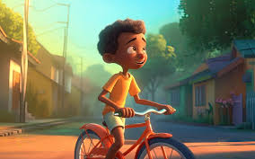
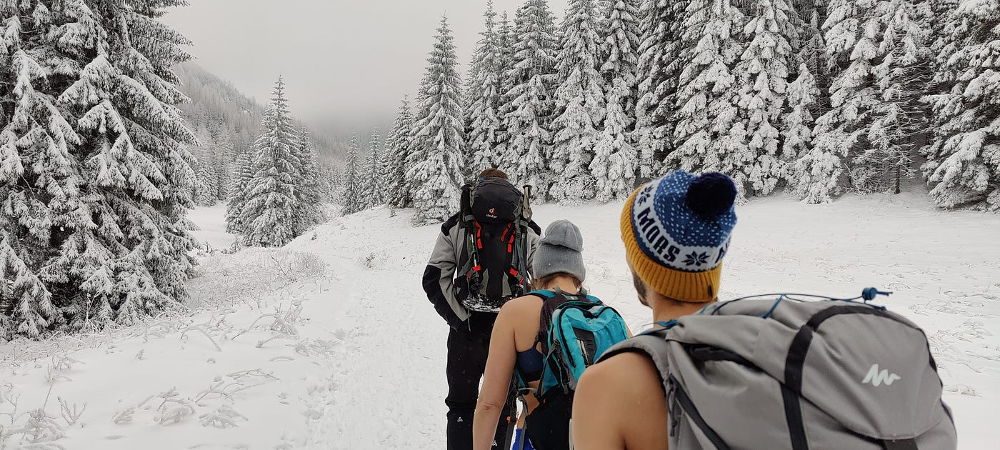
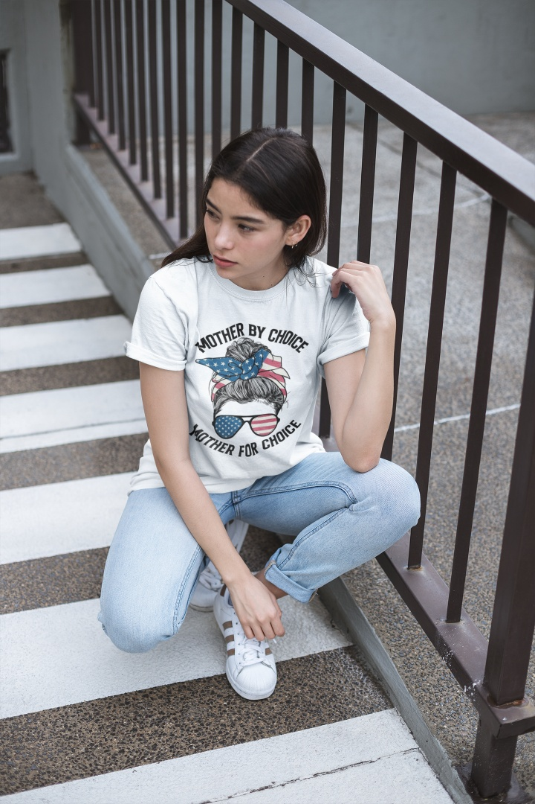
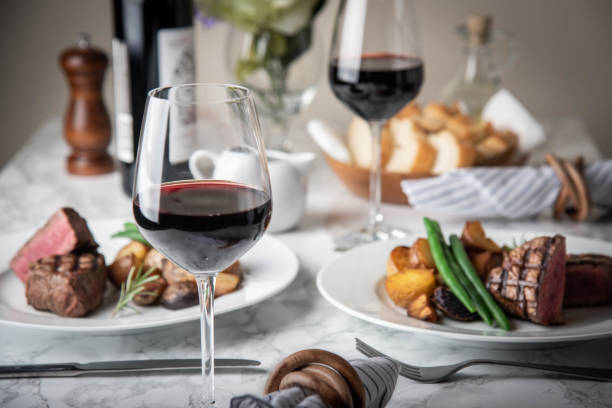
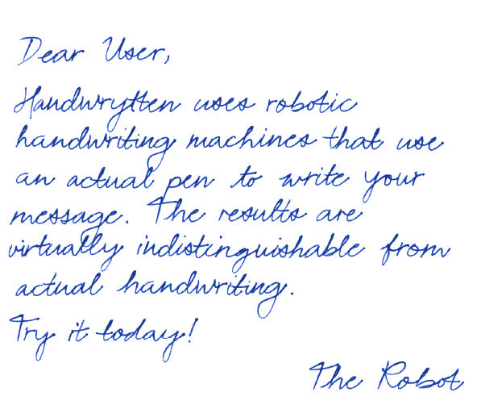
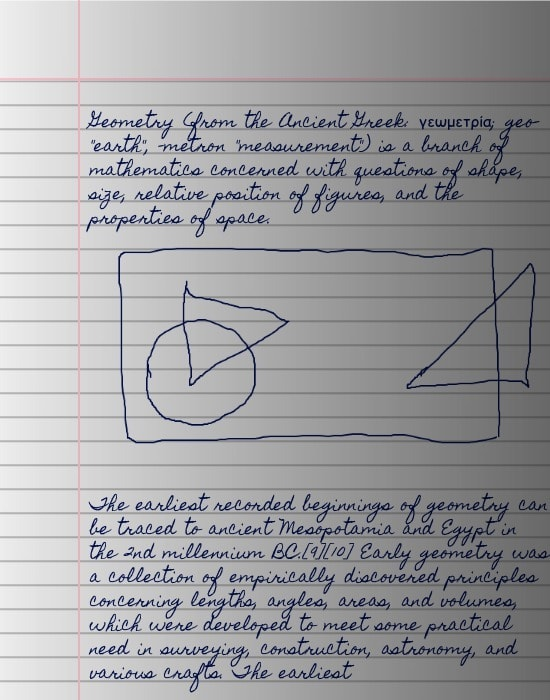
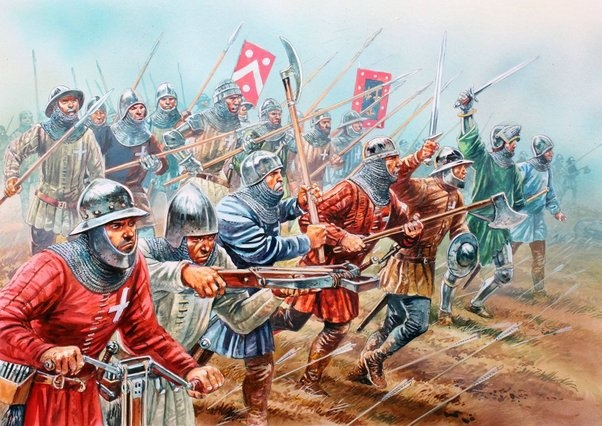
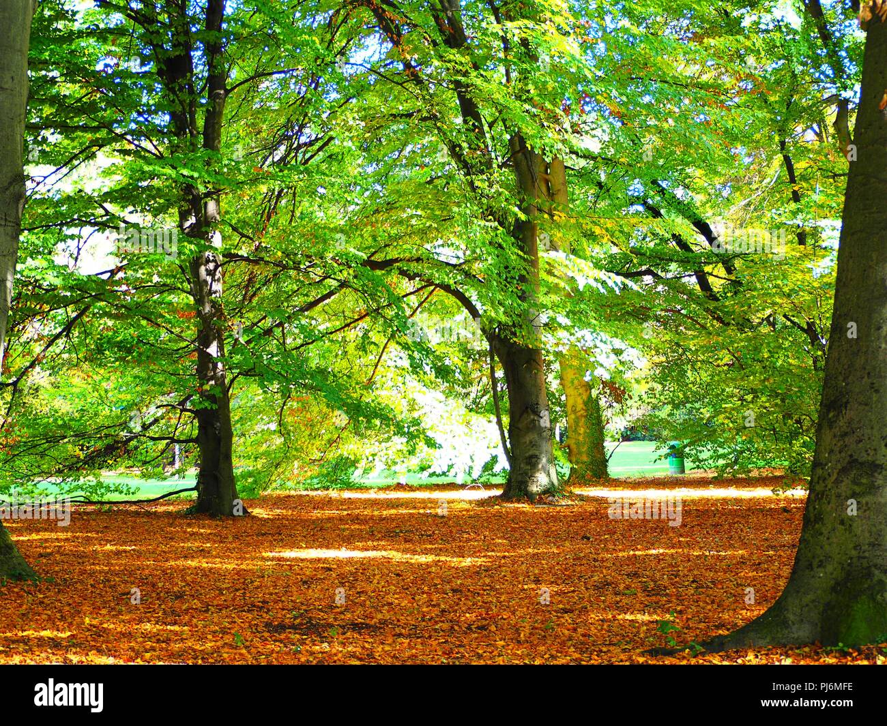

| Image | rsi_dataset_gen_13b/00_02_describe_answers_1.5_13b_h0.0.jsonl | rsi_dataset_gen_13b/00_02_describe_answers_1.5_13b_h0.1.jsonl | rsi_dataset_gen_13b/dpo_llava-13b_h0.0_h1.0.jsonl |
 | The image is a vintage looking comic version of a man's head with an emotion-filled face. His mouth is open, showing his teeth, and he appears to be grinding or roaring, giving off an intense and angry expression. The image depicts a classic comic illustration style, likely created for an action-packed comic or a superhero series. | The image depicts a man and a woman in a cartoonish depiction, each having a very overexaggerated angry facial expression. The woman with a red face is placed on the left side, while the man with a yellow face is on the right. Both faces exhibit a great amount of displeasure and seem to be yelling at each other. The image seems to capture a moment of intense anger or conflict between the man and the woman. | The image features a close-up of a man's face with an angry expression. He has red hair, and his mouth is wide open, showing his teeth. The man appears to be yelling or making an intense facial expression. The background of the image is white, which contrasts with the man's face, making him stand out prominently in the scene. |
 | The image features a woman with brown hair, opening her mouth wide, conveying a big surprise. She appears to have a neutral expression and looks like she is making a serious or unusual face. Behind her, there are muted colors and a small part of another person in the background. The woman's face is the central focus of the scene, and she captures most of the photo space. | The image portrays a pretty woman with curly hair, reacting to an amusing or shocking event as her mouth is wide open in surprise. A computer monitor in the background displays her amazed expression with an indifferent cat sitting in front of it. There may be a few other elements, such as a keyboard on the lower part of the monitor. The scene captures the surprise and amusement of the woman and the cat as they react to a startling surprise or playful situation. | The image features a woman with curly hair making a shocked or surprised face. She appears to be reacting to something unexpected or surprising, as indicated by her facial expression. The woman's mouth is wide open, and her eyes are wide open as well.
In the background, there is a computer screen displaying various emotions, including joy, anger, sadness, disgust, surprise, fear, and neutrality. The woman's reaction seems to be related to the emotions displayed on the computer screen. |
 | A young woman is sitting down and holding her head with her hand. She appears agitated, placing her palm over her forehead and drawing her eyebrows down as she experiences apparent discomfort or pain. The woman is also covering her eyes with her hand, which further highlights her emotional state. | The image captures a beautiful young lady dressed in a pink shirt and wearing a pink bra, with her eyes closed and her hair partially covering her face. She appears to be in distress or trouble, possibly even crying. The girl is touching her temple, and the distress seems to be centered around her facial and eye area.
The background features a brown wall, and the girl's hair and face are the central point of focus in this emotional and expressive scene. | The image features a young woman wearing a pink shirt with her eyes closed and her hand on her forehead. She appears to be experiencing distress or discomfort, possibly due to a headache or some other issue. The woman's facial expression suggests that she is in pain or discomfort. The scene takes place indoors, with the woman being the main focus of the image. |
 | The image features three wolves howling in the middle of a forest, with a row of very thin trees visible behind them. The wolves are standing on a hillside, surrounded by a serene natural environment. Each wolf is positioned at slightly different heights and angles, creating a sense of depth within the scene. The wolves appear to be depicted differently, with one wolf seeming more similar to a dog than the others. | The image depicts a serene scene with three wolves lingering next to each other on a path in the snowy woods, their eyes gazing outward toward the photographer. The wolves are arranged in a row, with one on the left side, another one in the center, and the third one on the right side of the image. The sky can be seen in the background, giving it a sense of depth to the scene. The presence of wolf howls adds to the picturesque and frosty atmosphere. | The image features three wolves standing together in a snowy forest, with their mouths open as if howling. They are positioned close to each other, with one wolf on the left side, another in the middle, and the third on the right side of the scene. The wolves appear to be facing the same direction, creating a sense of unity among them.
In the background, there are several trees scattered throughout the forest, providing a natural setting for the wolves. The snow-covered ground adds to the wintry atmosphere of the scene. |
 | The image showcases two girls playing with a brown and black dog in a grassy yard or park. One of the girls is actively engaged in the game, teaching the dog how to fetch by throwing a ball or toy for the dog to chase and catch. The dog is shown in action with the ball, exhibiting enthusiasm and excitement at chasing and securing the toy. The other girl stands in the background, likely observing or waiting for her turn to play. Overall, the scene displays a fun and energetic play session with the family's pets. | The image depicts a young woman standing next to a running dog on a grassy field. The dog is small and brown, and the woman appears to be engaging with the dog as they enjoy their time in the yard. The dog is playing with a pink ball in its mouth, which the woman is likely throwing for the pet. The scene conveys a joyful, lively atmosphere between the woman and her canine companion. | In the image, a woman and a dog are playing together in a grassy yard. The woman is holding a pink frisbee, and the dog is eagerly chasing after it. The dog is positioned towards the right side of the yard, while the woman is standing closer to the left side. The frisbee is located in the middle of the yard, capturing the attention of both the woman and the dog as they engage in this playful activity. |
 | The image features two colorful parrots sitting side by side on a thin tree branch, appearing to be quite vibrant and rich with rainbow colors. The parrots seem to be observing something in the distance or at each other, possibly interacting or simply exploring their environment. A subtle hint of a reflection is present in the image, enhancing the overall visual appeal and giving the scene a slightly distorted appearance. | The image features a lively scene with two pandas playing on a tree limb. The pandas have managed to break the vulnerability expression on the face of one of the parrots, creating an interesting juxtaposition between these two wild animals.
In addition to the pandas and the parrots, there are several horses in the scene, adding further diversity to the animals present. Their positioning varies, with some close to the tree branch and others farther away in the background, showcasing an intriguing coexistence between the different species in this collaborative scene. | The image features two colorful parrots perched on a tree branch. One of the parrots is predominantly blue, while the other has a mix of red, yellow, and blue colors. Both birds are sitting close to each other on the branch, creating a vibrant and eye-catching scene. The parrots seem to be enjoying their time on the branch, possibly engaging in social interaction or simply observing their surroundings. |
 | In a lush, grassy area, a large lion is comfortably resting in the sun. The majestic animal is seated next to a scrub tree, which casts a shadow on the grass beneath it. The peaceful setting features a beautiful backdrop with the sun on one side, silhouetting the lion and the tree. Another tree can be seen a bit further in the distance, completing the serene scene. The overall ambiance of the image brings a sense of tranquility and connects viewers to the natural beauty of the landscape. | The image shows a lush green field with a large lion standing under the full sunlight. The sun is slightly above the middle of the scene and is reflecting on the lion, which appears to be relaxed or snoozing in the field.
In the vicinity, a few trees are scattered throughout the field, providing the lion with some shade. Additionally, there is a bird seemingly hovering at the top-right part of the image, possibly catching some air or observing the lion from afar. | The image features a majestic lion resting in a grassy field with a tree in the background. The lion is laying on the grass, appearing relaxed and enjoying its surroundings. The sun is setting behind the lion, casting a warm glow on the scene and creating a serene atmosphere. The lion is the main focus of the image, capturing the viewer's attention with its impressive size and presence. |
 | The image captures a vibrant scene in the ocean with a huge mouth and sharks sucking up fish in the background. A variety of species of fish are clustered around the mouth and the sharks as they get consumed. There are at least eleven fish impaled by the shark's mouth in the scene, each with different sizes and shapes. The fish mainly surround the mouth, but some swim further away to avoid the parasite fish.
Alongside the main action, other fish play their part in completing the rich marine ecosystem. A multitude of eyes from a variety of fish can be seen both close and further away in the image. Overall, the scene is a dynamic portrayal of marine life in action. | The image showcases a large fish or whale swimming in open, blue water. This impressive fish not only dominates the scene but also captures the interest of numerous fish that are swarming around it. There are at least eleven smaller fish of various sizes scattered around the large fish, some close to the surface and others slightly deeper into the water. The scene depicts the whale making itself a center of attention as many other fish seem to be gathered around and feeding from it. It's a prime example of marine and aquatic life interacting in their natural environments. | The image features a large whale with its mouth open, surrounded by a group of colorful fish swimming around it. The whale's mouth is filled with fish, indicating that it is feeding on them. There are at least 13 fish visible in the scene, with some swimming closer to the whale's mouth and others further away. The fish are of various sizes and colors, creating a vibrant and lively underwater scene. |
 | The image captures a unique moment where a butterfly is landing on a purple blossom in the middle of a field of flowers. Another butterfly is seen nearby, sitting on a red and yellow flower. A bee can also be spotted flying among the flowers, adding to the lively atmosphere around these flowers.
In total, there are five flowers prominently featured in the scene, spread out throughout the field. The presence of both butterflies and bees showcases the biodiversity in this natural setting. | The image features a butterfly and a bee peacefully interacting on the orange petals of a purple flower. The bee can be seen buzzing around, while the butterfly is flapping its wings nearby. Both animals seem to be enjoying their time on the flower.
There is a group of flowers in the scene, some of them positioned in the upper part of the image, while others are placed more toward the center. The vibrant colors of the flowers contrast with the green leaves surrounding the area, creating a visually rich and lively environment. | The image captures a beautiful scene of a butterfly and a bee interacting with purple flowers. The butterfly is perched on one of the flowers, while the bee is hovering nearby. The butterfly has its wings spread out, showcasing its vibrant colors. The bee is positioned closer to the right side of the image, adding a sense of motion and liveliness to the scene. The combination of the butterfly, bee, and purple flowers creates a serene and picturesque moment in nature. |
 | The image displays an underwater world with a vibrant and wide variety of fish and colorful coral reef. Along the bottom of this coral reef, fish are swimming and interacting with one another. Some of the more prominent fish include various species of clownfish moving around in the water with other brightly colored marine creatures.
The fish are scattered across the reef, from the foreground to the background, creating a dynamic and engaging scene. The vibrant colors of the coral reef and the differing fish species make this an aesthetically pleasing and lively underwater environment. | The image captures a bright and colorful underwater world featuring a beautiful coral reef, lively rocky shoreline, and an array of different colorful fish. The fish can be seen sticking out of the rocks and cliffs, creating a vibrant scene.
Additionally, two birds can be spotted in the middle of the image, which adds variety to the creatures inhabiting the coastal area. The overall atmosphere of the image is lively and inviting, showcasing the incredible biodiversity that exists in this underwater environment. | The image depicts a vibrant underwater scene with a variety of colorful fish swimming around a coral reef. There are at least 13 different types of fish visible in the scene, each displaying unique colors and patterns. Some of the fish are larger, while others are smaller, creating a diverse and lively atmosphere.
The fish are scattered throughout the reef, with some positioned closer to the foreground and others further in the background. The coral reef serves as a stunning backdrop for these beautiful marine creatures, showcasing the richness and diversity of life in the ocean. |
 | The image captures two beautifully colored seagulls leaping out of a body of water near the ocean shore during the sunset. They are gracefully rising into the air above the waves as they jump. The backdrop of the sunset creates a serene and picturesque scene, highlighting the vibrant colors of the seagulls, blending well with the warm hues of the sun as it sets below the horizon. | This image showcases a pair of dolphins skipping across waves next to a serene sunset. The dolphins are located near the center of the scene, with one following the other closely. The waves look as if they've been affected by a natural phenomenon, emphasizing the beauty of the sunset. The silhouettes of the dolphins leap against the vibrant hues of the sky, highlighting their graceful movements. | The image captures a beautiful scene of two dolphins gracefully leaping out of the ocean waves during a sunset. The dolphins are positioned close to each other, with one dolphin slightly ahead of the other. They appear to be enjoying their time in the water as the sun sets in the background, casting a warm glow over the scene. The ocean waves surrounding the dolphins add to the serene atmosphere of the image. |
 | The image captures a pleasant scene of a family of three elephants, a large one standing guard and accompanying two younger ones, making their way through a grassy field. The elephants appear to be in a forest setting, with some trees visible around the area. They are dispersed throughout the grass field, with the large elephant occupying a central position. The two smaller elephants are located to the left and right of the large elephant, providing a sense of unity and togetherness among the group. | The scene shows a herd of elephants, including two baby elephants, walking across a lush green field. The elephants are close to each other, possibly indicating that they are part of the same family. A beautiful, green mountain range can be seen in the background, adding to the picturesque scene.
The elephants are spread across the field, displaying various sizes indicating ages. From left to right, there is one adult elephant, followed by one large and one small baby elephant. Two more baby elephants can be seen nearby, positioned to the right of the large baby. | The image depicts a family of elephants, consisting of two adult elephants and a baby elephant, standing together in a grassy field. The adult elephants are positioned on either side of the baby elephant, creating a sense of protection and togetherness. The baby elephant is located in the center of the scene, surrounded by the two larger elephants. The family appears to be enjoying their time in the open field, possibly grazing or exploring their surroundings. |
|  | In the image, a young boy is riding a bicycle down a residential street. The boy is wearing shorts and sunglasses, and there's something yellow on him. He is sitting on the bicycle, controlling it carefully as he navigates the street.
The street is lined with several houses, giving it a suburban feel. There is another person visible in the background, likely a pedestrian or a resident of the neighborhood. A backpack is placed near the middle of the street, which might belong to the boy or someone else in the vicinity. | The image is a quarterly view of a black boy sitting on a desk in a living room. He is riding a red truck surrounded by yellow walls. In front of the truck, a row of books is laid out, while two potted plants can be seen in the room, one towards the right side and the other further in the background, near the right-hand side of the image. A TV screen is also visible in the background on the right side. The overall ambiance of the scene appears to be bright and lively. | The image depicts a young boy riding a bicycle down a residential street. He is wearing a yellow shirt and appears to be enjoying his ride. The boy is positioned in the center of the scene, with the bicycle taking up a significant portion of the image.
The street is lined with houses on both sides, giving the impression of a neighborhood setting. There are several potted plants placed along the street, adding a touch of greenery to the scene. Additionally, there is a car parked on the left side of the street, further emphasizing the residential nature of the area. |
 | The image features an animated cartoon character situated in a frame. The cartoon woman is standing next to creepy ghosts, skeletons, and another woman who appears to be a leader. The animation seems to be odd, with the frame displaying symbols behind the characters.
In addition to the animated characters, there is a teddy bear and a blowfish in the scene. The teddy bear occupies a portion of the left foreground, while the blowfish is positioned closer to the center. The overall effect is an eerie and interesting mix of characters and elements. | The image is a captivating illustration featuring three fictional anime-style characters in a bright and vivid scene. One of the characters is a woman holding a deadly trident in her hands while smiling at the camera, displaying her confidence in her choice of weapon. Beside her are a girl dressed in white and a character wearing a kimono.
Two dragons can be observed, one on the left side and another on the right side of the image, possibly contributing to the fantasy world these characters inhabit. The scene is further imaginetic, with the three women present in a background that seems to be a mix of abstract elements and colorful, cloudy skies hanging above them. | The image is a colorful and vibrant painting featuring a young girl with purple hair, dressed in a white kimono, standing in the center of the scene. She appears to be the main focus of the painting.
Around her, there are several other characters, including a dragon on the left side of the painting, a blue bear on the right side, and two other people, one on the left and the other on the right. These characters seem to be interacting with the girl in the kimono, creating a lively and engaging scene. |
 | The image features a man smiling and casually holding a camera. He stands prominently in the scene, surrounded by bursting stars and dirt. These stars and debris create a captivating and unconventional backdrop that captures attention.
Another person, wearing cowboy boots, is standing on a pile of rocks without looking at the main figure. This arrangement creates an interesting contrast between the casual and curious expressions of the main subject and the more focused and calm demeanor of the second individual. A tie can be spotted in the background, adding a unique detail to the scene. | The image portrays a lighthearted and imaginative scene, featuring a man dressed in a blue shirt and glasses standing next to a tilted rainbow. He has a whimsical smile on his face as he looks at the camera.
An eye chart might have been altered to create a large tie depiction on the man, adding to the quirky nature of the scene. A backdrop of stars further enhances this artistic visual. The stars are located in the space behind the man and on the right-hand side of the scene. Additionally, there are three smaller figures of people within this scene.
In the composition, a sports ball is situated near the middle, accompanied by two other figures. The unique combination of elements creates a playful and fun atmosphere. | The image features a man wearing glasses and a blue shirt, holding a camera and smiling as he takes a picture of another person. The person being photographed is wearing an orange shirt and appears to be posing for the picture. They are both standing on a rainbow-colored surface, adding a vibrant touch to the scene.
In addition to the main subjects, there are several stars scattered throughout the image, further enhancing the colorful and lively atmosphere. A handbag can also be seen placed nearby, possibly belonging to one of the individuals in the scene. |
 | In the image, there is a lively scene featuring multiple colorful and happy minions posing for the camera. Two of the minions are wearing birthday party blowers and standing close together, possibly enjoying a festive celebration. These two prominent characters are the center of attention in this cheerful cartoon picture.
Surrounding them are various minions with different positions, sizes, and combinations of eyes and mouths. Some of these minions are standing close together, while others are situated farther apart. Overall, the image captures the amusing and collective spirit of the minion characters in a fun-loving atmosphere. | The image features a colorful scene of a party of ant-like yellow minions from the movie "Despicable Me 2." There are several minions scattered throughout the scene, engaging in conversation and enjoying the company of their fellow partygoers. Among them, one minion is holding a rainbow-colored cup which adds to the festive atmosphere.
Two of the minions are the focus of attention, posing large-headed with their mouths wide open and seemingly contributing their funny and unique expressions to the lively gathering. The overall composition of the scene is bright, vibrant, and full of joy, characteristic of a delightful Minion party. | The image features a group of yellow and blue minions from the popular animated movie "Despicable Me." Two of the minions are prominently standing in the center of the scene, posing for a picture with their mouths wide open. They are both wearing party hats, adding to the festive atmosphere.
In addition to the two main minions, there are several other minions in the background, some of which are also wearing party hats. The scene appears to be a lively gathering or celebration, with the minions enjoying themselves and each other's company. |
 | The image features a man and a woman, drawn in a style similar to that of the characters depicted in the movie "Trolls." The woman is wearing oversized glasses on top of her head and appears to be looking at the man as he walks next to her or towards the exit. The man is positioned slightly behind the woman, walking through the doorway behind her.
As they both move through the scene, the man seems to have a playful and entertained expression. The woman's focal point is her hand holding a facial tissue, which she might be using to wipe or dust something off. The presence of two people in a story, as if they are characters in a comic book or animated movie, adds a sense of fun to the image. | The image features two colorful characters from a computer-animated movie. The characters appear to be standing in separate scenes, with one near the top left side of the image and the other near the top right. Both characters are distinct, resembling a childlike appearance, potentially children from the movie.
One of the characters has glasses on, making them easily distinguishable. Both characters include a unique background element, with one character having a chair and the other holding a computer mouse. The inclusion of these objects brings the animated scene to life, contributing to the overall atmosphere of the movie. | The image features two animated characters from the movie "Trolls." The first character is a girl wearing glasses, a green sweater, and a bow in her hair. She is sitting at a computer desk, typing on a keyboard. The second character is a man with a beard, wearing a suit and tie. He is standing in the doorway behind the girl, observing her as she works on the computer. The scene captures a moment of interaction between the two animated characters. |
 | The image showcases a whimsical scene featuring a group of characters from the movie "Zootopia." There are several animal puppets standing together, posing for a photo. In the group, a giraffe is situated on the left side, a monkey appears in the center, and a cow is visible on the right side. The group also includes a dog near the front-left of the group and a red panda hugged in the middle. Additionally, there are three birds sitting around, with one mostly in the foreground, and the other two on the top-right and bottom-right sides of the scene. | This is a digital animated image, possibly from a video game or advertisement, featuring various animal characters as companions. There are six main characters posing for the scene, all of them having a smiling or grinning expression, with four of them wearing ties. They stand in a line, overlapping with each other.
In addition to the main characters, there are several other small figures visible in the picture, positioned below, above, and on the sides of the main characters. These extra characters may represent additional characters or simply be decorative elements within this interactive digital image. | The image features a group of animated characters from the movie "Zootopia" posing together for a photo. There are six main characters in the scene, including a lion, a giraffe, a hippo, a pig, a fox, and a rabbit. They are all smiling and appear to be enjoying their time together.
In addition to the main characters, there are two smaller figures in the background, one on the left side and the other on the right side of the image. A tie can also be seen in the middle of the scene, possibly belonging to one of the characters. |
 | The image is a montage of several characters or movie posters in a close-up shot. There are a total of five characters represented, and all of them are related to movies, particularly Disney and Marvel productions.
The first character is a senior gentleman from Disney, who appears confused and disoriented. He is located on the left side of the image. The second character puts on a tough front and comes from the world of Marvel Comics. This character is positioned in the middle, covering a significant portion of the image.
The third character is displayed on the right side of the image, with an action-packed pose, and the fourth character is a cartoon with a somewhat confused expression. Finally, on the far right side of the image, there is a young woman wearing a pink shirt, who displays a conflicted emotion. | The image is a collage featuring various characters from various movies. There are five distinctive figures in total: two characters from the Matrix, two Disney characters, and one character from Star Wars. Each figure is labeled with its respective name or movie title.
The collaged image captures the essence of these characters, engaging the viewer's imagination and appreciation for the popular movie franchises. In addition to the main characters, there are two smaller images in the background, possibly representing various supporting roles or movie locations. | The image features a collage of various characters from different movies, including Spider-Man, Scarlett Johansson's character from The Avengers, and a character from Monsters vs. Aliens. Each character is represented by a stylized illustration.
Spider-Man is positioned on the left side of the collage, while Scarlett Johansson's character is located in the middle. On the right side, there is a character from Monsters vs. Aliens. The characters are arranged in a visually appealing manner, showcasing the diverse range of movies they come from. |
 | The image displays a black and white artwork, likely an oil painting, showcasing a person with their mouth wide open in a scene of extreme panic and horror. This person is at the center of the frame, with nothing else in the painting except the crossbar from which they are screaming.
In the background, there are four small boats located behind the individual, scattered at different positions on the picture. Despite the dark and intense theme, the presence of these boats suggests that an actual ocean is not visible within the painting. | The image features a painting depicting a partially painted figure of a screaming person, likely in front of a crashing wave or the edge of a cliff, with a train coming towards it. The figure's face captures the emotional intensity of the scene, as it's in the midst of a scream.
The second person can be seen on the left side of the image, but it seems to be only partially included in the frame. The background consists of a painting of water, adding depth and drama to the scene. | The image depicts a painting of a person, possibly a woman, screaming with their mouth wide open. The person appears to be in a state of panic or fear, as if they are experiencing a nightmare. The background of the painting features a large body of water, which adds to the dramatic and intense atmosphere of the scene. The screaming figure is the main focus of the painting, capturing the viewer's attention and evoking a sense of unease. |
 | The image features three gods or figures, each in the color of blue, green, and red. They are painted in a four-panel art piece, with a large background visible, likely filled with intricate details of their surroundings. Each of the figures appears to be playing a musical instrument.
The blue figure has a drum in front of it, creating a focal point in striking contrast against the rest of the scene. The figurines seem to be enjoying themselves as they engage in their artistic expression, showcasing harmony and unity despite their differing colors. The entire scene radiates an aura of creative inspiration and artistic brilliance through the depicted characters and precise details in the artwork. | The image showcases a large, colorful painting of three people playing music together. They are depicted as a group of three women, each holding a musical instrument - a saxophone. The women are sitting on a bench, which is surrounded by trees, adding a warm, natural atmosphere to the scene. The painting captures the essence of the harmony and enjoyment brought by living music. | The image depicts a vibrant and colorful painting of three men sitting together, each holding a musical instrument. They appear to be enjoying their time as they play their instruments. One of the men is holding a guitar, another has a drum, and the third man is holding a flute.
The three men are positioned closely to each other, with one person on the left side, another in the middle, and the third person on the right side of the painting. The painting captures the essence of music and camaraderie among the three individuals. |
 | In this vivid painting, a person stands on the shore of a beautiful lake at sunset. The serene environment is enhanced by the warm and glowing light reflecting on the water. The individual is isolated from the scene, seemingly enjoying the peaceful ambiance created by the tranquil water and captivating sky.
There are no additional people or animals visible in the painting, adding to the calmness of this picturesque scene. It appears to be a personal moment of reflection and appreciation for the natural setting. | The image depicts a serene landscape scene at sunset, featuring a person sitting under a tree on top of a hillside. The person appears to be enjoying the peaceful view and the setting sun. In the foreground, a flowing stream can be seen, adding to the beauty of the scene.
The sunset adds a soothing ambiance to the environment, as the colors of the sky and hills become more vibrant. As the evening comes to a close, the shadow casted by the tree and the person sitting beneath it creates a sense of tranquility. Off in the distance, some buildings and trees can be observed, framing the picturesque scene. | The image depicts a serene scene of a person standing near a body of water, possibly a lake or a river, with a beautiful sunset in the background. The person appears to be holding a lantern, adding a sense of tranquility to the scene.
Surrounding the person and the water, there are several trees, creating a peaceful and natural atmosphere. In the distance, a cityscape can be seen, contrasting with the calmness of the water and the person's presence. The combination of the sunset, the person with the lantern, and the trees creates a visually appealing and harmonious composition. |
 | The image depicts a lush, colorful forest enclosed by a magical explosion of lights. Painted vividly, the scene resembles a vibrant greenhouse full of trees. The trees showcase a variety of shapes, sizes, and hues, creating an enchanting and lively atmosphere. The combination of the bright colors, the lit-up area, and the unique details of the trees altogether results in an artistic and vivid illustration of the forest. | The image features a vibrant painting of several trees in a moonlit forest. The painting shows a bend in the road as it winds through the forest, creating a captivating natural scene at night. The trees are filled with bright colors, such as teal and fuchsia, which adds a whimsical touch to the view. The overall atmosphere of the forest is lively and magically serene. | The image depicts a vibrant and colorful forest scene with trees, bushes, and a stream of water flowing through it. The forest is filled with a variety of plants and flowers, creating a lush and lively atmosphere. The sun is setting behind the trees, casting a warm glow on the scene.
In addition to the natural elements, there are several birds scattered throughout the forest, adding a sense of life and movement to the scene. The combination of the vibrant colors, lush vegetation, and the presence of birds creates a captivating and serene environment. |
 | The image captures a boy and a girl sitting next to each other in a living room. They appear to be in comfortable surroundings, and they are both positioned on couches. The boy is seated to the left of the girl, sitting in a clasic reproduction, brown suede chair. The girl is occupying a couch on the right side.
There are a few lights visible in the image, including one on the left side of the room and another on the right. Additionally, there is a third light located closer to the bottom-right couch. The scene conveys a sense of coziness as the couple enjoys their time together in the living room. | The image depicts a man and a woman sitting down, facing each other while appearing as if they're conversing or watching something together. The man is seated on the left side of the frame, and the woman is sitting on the right side. They occupy a drawing room with a bed right behind them, and there is a couch in the room, providing ample seating for relaxation.
Several objects are scattered throughout the room. A bottle can be found near the right-hand side of the bed, while a cup is placed closer to the lower right corner. There are two displays of handbags located close to the man and the woman, adding to the cozy atmosphere of the setting. | The image is a black and white drawing of a man and a woman sitting together on a couch in a living room. The woman is sitting on the left side of the couch, while the man is sitting on the right side. Both of them appear to be relaxed and enjoying each other's company.
In the room, there are two chairs, one behind the man and the other behind the woman. Additionally, there are two lamps, one on the left side of the room and the other on the right side, providing light to the space. A cat is also present in the scene, resting on the floor near the left side of the couch. |
 | The image presents an exceptional watercolor portrait of a woman with vivid colors and details. She appears to have multiple facial features and hair, giving her a unique, artistic look. The painting highlights the beauty of the subject while showcasing the creativity of the artist. The woman's face stands out, capturing the viewer's attention. Overall, the picture exhibits a powerful union of aesthetics and technique, resulting in an outstanding portrait. | The image is a creative painting featuring a woman with her face filled in with different colors, creating an abstract portrait. The scene comprises several shades, showcasing the woman's various facial expressions. She is wearing a colorful curly wig that adds a vibrant touch to the painting. The girl appears to be peeking over a line, further developing the interesting composition of the artwork. The overall effect of the painting is striking, as it showcases a unique and colorful depiction of the subject. | The image features a woman's face painted in a colorful and artistic manner. She has red hair and is wearing a black shirt. The woman's face is the main focus of the painting, and it is surrounded by a vibrant background filled with various colors and patterns. The artistic style of the painting gives the image a unique and eye-catching appearance, showcasing the creativity and skill of the artist. |
 | The painting features a quaint street scene with multiple people and trees adding to the atmosphere. There are a total of seven people in the scene. A man and a woman are walking down the street, and they have a dog following close behind them. The dog appears to be enjoying this stroll as it moves along with the couple.
In addition to the man, woman, and dog, there are several other pedestrians walking on the street—some closer to the foreground and others toward the middle and background of the painting. There are six birds flying around, adding to the liveliness of the scene.
The street is lined with at least ten distinct trees that provide a sense of depth and structure to the composition. The overall impression of the painting is one of harmony and leisurely life in a cozy town setting. | The image features a painting depicting a couple walking down a rain-covered sidewalk. They are accompanied by a dog, which is close by as the people walk along, enjoying each other's company. The wet streetscape reflects the ample light from colorful trees on the street. This vibrant scene creates a lively and atmosphere unique to the artistic portrayal. | The image is a painting of a couple walking down a rain-soaked city street at night. The man and woman are holding hands as they stroll along the wet sidewalk. The street is lined with trees on both sides, creating a serene atmosphere despite the rain.
There are several birds visible in the scene, adding a touch of liveliness to the painting. One bird can be seen flying above the couple, while others are perched on the trees or soaring through the air. The painting captures the essence of a rainy night in the city, with the couple enjoying each other's company amidst the wet surroundings. |
 | The image depicts a big outdoor ice skating rink with numerous people enjoying the activity. Several people are scattered around the rink, either skating or preparing to, with many of them wearing backpacks. Some of the skaters are using ski poles to help their balance. There are potted plants placed in various locations around the rink, possibly serving as decoration or safety measures.
The atmosphere is lively, and people of various skill levels showcase their skating abilities. This popular event brings the community together, creating a sense of excitement and fun on a beautiful day. | The image captures a sunny day at a park where many people are roller skating on a paved area. One of the skaters is skillfully doing a trick while others are enjoying their time on the skating surface. There are at least 13 people visible in the scene, all happily participating in the outdoor activity. Their skates can be seen lying on the ground alongside them.
The park is framed by a beautiful background, with trees and a forest in the distance, adding to the charm of the skating area. A clock is visible, indicating the time of the day to visitors at the park. Overall, it is a lively scene of people enjoying recreational activities and the pleasant outdoor weather. | The image captures a lively scene at an outdoor ice skating rink on a sunny day. A large group of people, including both children and adults, are gathered around the rink, enjoying their time on the ice. There are at least 14 people visible in the scene, with some standing closer to the rink and others further away.
In addition to the skaters, there are several potted plants placed around the area, adding a touch of greenery to the scene. Some of these plants are located near the rink, while others are placed further away, creating a pleasant atmosphere for the skaters and spectators alike. |
 | In the image, there are three men playing soccer on an indoor field, with one rushing towards the soccer goal while another player is defending. A third man is also leaping towards the net, carrying the soccer ball. The goal is on the left side near the center of the indoor field.
Several other people are standing at the edge of the field, watching the game. Some of them appear to be closer to the action, while others are positioned at a further distance. The presence of these onlookers suggests that the game is quite engaging and entertaining. The soccer ball is located in the front part of the scene, capturing attention from everyone involved. | The image captures a lively soccer game in progress, with several men dressed in soccer uniforms playing and trying to score goals. They are seen eclipsing each other as they focus on the soccer ball. One of the players even appears to be doing a trick with the soccer ball, attempting to outwit the others on the field.
The game is taking place in a stadium or arena setting, with multiple people actively participating. In addition to the players on the field, a person behind them is taking a picture to document this exciting moment. The atmosphere is charged with energy and anticipation as the players display their athletic abilities in the sport. | The image captures an exciting moment during a soccer game, where three men are leaping into the air to head the soccer ball. They are all focused on the ball, which is positioned in the middle of the scene.
In addition to the three main players, there are several other people in the scene, some of whom might be teammates, opponents, or spectators. One person can be seen on the left side of the image, while two others are located on the right side. Another person is standing further back on the left side, and two more individuals are positioned on the right side of the image.
A sports ball, presumably the soccer ball, is located in the center of the scene, drawing the attention of the players as they jump to make contact with it. |
 | The image shows two people in scuba gear, both floating in the blue water underwater. One of the scubas has a styling tool attached to their head, giving off the impression that they may be giving a fast haircut or something similar to the other person while underwater. The scene is unusual and unconventional, as these tasks are typically done on land, not in a sea environment. | The image depicts an aerial view of two women underwater in a blue ocean. Both women appear to be underwater divers with one of them possibly posing for a picture. They are both equipped with white masks on their faces, which suggests they are divers.
One woman can be seen with flippers on, while the other is playing lightly with a hairdryer. The presence of a hairdryer in this context is unusual, as hair dryers are typically for use above water. However, it adds a whimsical touch to the scene.
The women appear to be enjoying their time underwater, surrounded by the beauty of the ocean. | The image features two women in scuba gear, one of them shampooing the other's hair while they are underwater. The woman getting her hair shampooed is wearing a wetsuit, while the other woman is holding a hair dryer to dry the hair after the shampooing process. Both women appear to be enjoying the unique experience of having their hair styled underwater. |
 | The image features a dryer drum, where a single t-shirt is currently sitting. This drum is being rotated by a machine, as it dries the t-shirt efficiently. The transparent glass on the front of the dryer allows for an easy view of the contents, helping to prevent overloading or accidents.
There are three rows of lights visible in the dryer, which emit light and illuminate the machine, presumably to display any patterns related to the machine's operation or condition. The dryer is situated in a kitchen area, as can be deduced from its presence on the blue counter. | The image is a close-up view of a blue and silver blender or food processor that is not currently in use. The appliance has a bowl with a very flaty bottom, likely the base for processing food. The container is sitting on a blue counter in a kitchen setting. The beauty of its design, along with its built-in light, makes it a practical household appliance that can quickly prepare food and beverages. | The image features a blue light illuminating the inside of a coffee maker. The coffee maker is placed on a blue countertop, and the blue light is shining through the glass lid, creating a visually appealing effect. The coffee maker appears to be empty, with no coffee beans or liquid visible inside. The blue light adds a unique touch to the scene, making the coffee maker stand out on the countertop. |
 | In the image, there are several urinals in the background. A female who appears to be brushing her teeth is standing prominently in front of a wall. She is wearing a blue dress and holding a brown purse in her right hand. With a toothbrush in her mouth, she is in front of a bathroom mirror with a tiled wall behind her. In the background, there are more urinals and a sink to her right side. | The image features a woman standing in a bathroom, brushing her teeth while looking into the mirror. She is wearing a blue spaghetti-string top and appears to be the center of attention. There are three other people in the scene, but they are situated at varying locations and are not the primary focus of the image.
On the floor near the tooth brusher, there is a handbag. Additionally, a toothbrush can be seen in the woman's hands, and another toothbrush is located on the floor. The bathroom setting is accentuated by the presence of a toilet situated at the left side of the room. | The image features a woman standing in a bathroom, brushing her teeth while looking at her reflection in the mirror. She is wearing a blue dress and holding a brown purse in her hand. The bathroom has several urinals lined up along the wall, indicating that it is a public restroom. The woman appears to be focused on her personal grooming routine as she brushes her teeth. |
 | The image shows a fork leaning against a container filled with a thick stew, likely a creamy soup. The container, possibly a Tupperware dish, seems to be mostly empty, with only a small amount of stew remaining. The fork is on the edge of the container, ready to be used for eating the last of the meal.
The scene features several carrots scattered around the dish, adding more color and seasoning to the soup. The focus of the image is the close-up of the fork in the Tupperware, capturing its impressive size in comparison to the container. | The image features a bowl of slurry, which resembles a delicious dessert suitable for a lunchbox meal. The dessert has a fork poking in it, specifically pushed into the embankment of the slurry. This suggests that the thick liquid food is ready to be enjoyed, and the person is perhaps about to take a bite. The dining table where the cup of slurry is placed is covered with a layer of vapor, adding moisture to the atmosphere. | The image features a close-up view of a fork sticking out of a bowl filled with a creamy soup or stew. The bowl is placed on a dining table, and the fork is positioned in the middle of the bowl, partially covered by the soup.
In addition to the soup, there are several carrots scattered throughout the bowl, adding color and texture to the dish. Some of the carrots are located near the fork, while others are spread across the bowl, creating a visually appealing and appetizing meal. |
 | The image shows a singed or burnt area with a person, or a submarine with a sea hag, flying through a tunneling system. The scene has an animated quality, appearing somewhat realistic, but not entirely so. The person is inside a submarine or some other underwater vehicle, surrounded by lava or molten rock.
The tunneling system is reminiscent of a volcanic cave or a hollowed-out rock, with a dingy appearance. The submarine appears to be descending into this environment. Given the tunneling system's reminiscence of a volcanic cave, the setting could be within a volcano. However, it is quite improbable that a submarine would be operating within such a cave. | The image features a man floating through a cave-like environment on a silver submarine with a propeller. His jetpack is activated, providing him with a unique mix of fire and water that propels him further in this imaginative scene. The area surrounding the submarine has a dark, eerie atmosphere, likely featuring a mixture of fire elements that add to the unusual setting.
The man appears to be in the middle of the cave, navigating through the artery with a sense of adventure and exploration. The blending of the fire and water qualities creates an interesting contrast in the scene and adds excitement to the overall atmosphere. | The image depicts a video game scene featuring a person in a diving suit, flying through the air while riding a jetpack. The person appears to be in the middle of an underwater cave, surrounded by lava and rocks. There are several rocks scattered throughout the scene, some closer to the person and others further away. The diving suit and jetpack give the impression that the person is exploring the depths of the cave, possibly searching for treasure or navigating through the challenging environment. |
 | In the image, a man wearing only shorts and no socks stands in the middle of a snowy field, holding black and red luggage. The setting appears to be a forest, with the man standing in front of a wooded area. Despite the cold weather, the man seems prepared to continue his journey, confidently strolling through the snow. | In the image, a man wearing a yellow shirt and flip flops stands in a winter setting, surrounded by snow. He has a red and black suitcase next to him, seemingly ready for travel. The man is positioned in the center of the scene, appearing slightly confident as he takes up the frame. The snow-covered background contrasts with the warm clothes and the man's luggage, creating a unique and unconventional atmosphere. | In the image, a man wearing a yellow shirt and blue shorts is standing in the snow, holding a red and black suitcase. He appears to be posing for a picture in the snowy environment. The man is positioned in the center of the scene, and the suitcase is held close to his body. The snow-covered surroundings create a contrasting backdrop for the man and his luggage, making the scene visually interesting. |
 | The image captures an action-packed scene of a man riding a motorcycle through the water, appearing quite daring. The man, wearing a helmet, skillfully takes a corner on his sport machine, creating a spray from the water while riding through it. His white suit matches the white trouncing wave created by his vehicle as it moves swiftly through the water.
In addition to the rider, there are four other people in the scene, likely observing and enjoying the thrilling display of skill. The location seems to be a trade fair or special event where such displays are a common sight. | The scene portrays a person riding a motorcycle on water, likely on the open water or through a stream. The rider is making their way across the body of water at a swift pace, creating a wake behind them as they move smoothly through it. The motorcycle itself can be spotted near the person, helping them stay afloat.
With the motorcycle's ability to traverse water, it is likely a specially designed vehicle designed to handle such challenging terrain. The rider's skill and expertise are on display as they navigate the waterway on their unique motorcycle. | The image captures a thrilling scene of a person riding a motorcycle through a body of water, such as a lake or ocean. The motorcyclist is skillfully navigating through the water, kicking up a spray of water behind them. The rider is wearing a helmet, ensuring their safety while enjoying the exhilarating experience.
The motorcycle is positioned towards the right side of the image, with the rider sitting on top of it as they ride through the water. The scene showcases the rider's adventurous spirit and their ability to handle the motorcycle in challenging conditions. |
|  | The image showcases a group of four people wearing backpacks and walking up a snow-covered trail. They are hiking up the side of a snow-covered mountain, following the trail beneath the trees. The snowy environment and the presence of backpacks suggest they are on an outdoor adventure or recreational trip. The group consists of one person slightly ahead of the others, two others side by side, and the last one slightly behind the first two. | The image depicts a group of several people wearing ski equipment, likely backpacking or engaging in winter sports on snow-covered mountains. They are standing close to each other and appear to be kitted up for skiing or snowboarding activities. In addition to the group of people, two backpacks can also be seen, one being carried by a person standing slightly apart from the group and another one near the center of the scene. | The image depicts a group of people hiking up a snow-covered mountain. There are five individuals in the scene, each wearing backpacks and walking through the snowy terrain. They appear to be enjoying their outdoor adventure despite the challenging weather conditions.
The backpacks vary in size and are distributed among the hikers, with one person carrying a larger backpack than the others. The group is spread out across the scene, with some hikers closer to the foreground and others further in the background. The snow-covered landscape and the group's determination create a sense of adventure and camaraderie among the hikers. |
 | The image features a two-dimensional or fake snowman made of sand or a sculpture, wearing a top hat and smiling for the camera. It occupies a significant portion of the scene and appears to be slightly overweight in the figure. The snowman is positioned prominently in the center of the image, showcasing its whimsical and playful appearance. | The image features a sculpture or decoration of a snowman sitting on a beach, surrounded by sand instead of snow. The white snowman is accompanied by a toy Santa Claus, both standing out as unique elements on the beach. In addition to the snowman and Santa Claus, there is a tealight positioned nearby. Since the scene takes place on a beach, it is an unconventional setting for wintry decorations. | The image features a snowman with a top hat and a carrot for a nose, standing in a desert-like environment. The snowman appears to be made of sand, giving it a unique and interesting appearance. It is situated in the middle of the scene, surrounded by a sandy landscape. The contrast between the snowman and the desert setting creates an intriguing visual effect. |
 | The image shows an enchanting landscape of a snow-covered field in the middle of a dirt field. The field itself is situated at the bottom of a volcano. The top of the mountain is situated around the middle of the scene, where a large gap in the surface hollows out. It appears as if the natural surface of the mountain has been extracted from its body. The contrast between the white snow-covered field and the surrounding dirt landscape creates a striking visual effect. There is a sun visible on the right side of the image, casting light on the scene. | The image displays a large, crater-like hole in a landscape that is filled with white snow. The snow fills the center of the crater and extends towards the open triangle of the space, while the surrounding area appears to have been covered in a patch of dirt. The contrast between the cold, white snow and the warm, dirt-covered ground creates a visually striking scene. The large, hole-like shape reminds one of a big, beautiful blue eye on the side of earth. | The image showcases a unique landscape on a distant planet, featuring a large crater with a frozen lake at its center. The frozen lake is surrounded by a ring of dirt, creating a striking contrast between the icy surface and the surrounding terrain. The crater appears to be located in a desert-like environment, adding to the distinctiveness of the scene. The combination of the frozen lake and the arid surroundings creates an intriguing and otherworldly atmosphere. |
 | The image displays a young boy standing in awe next to a cold volcanic bank, mesmerized by the firestorm brewing inside it. The volcano is surrounded by rocks and fire, with smoke rising and swirling around it.
A few other people can be seen in the background distant from the main focal point, but all eyes are drawn to the spectacle of the fiery mountain nearby. This setting showcases the raw power of the natural world that the boy is experiencing. | The image captures an impressive scene of a woman in a ballistic suit preparing to enter an active war zone. She is wearing a helmet and a neon green vest, indicating her readiness and protective gear for the challenging situation.
The woman is quite close to the large, raging fire captured in the photo. There is thick smoke surrounding her due to the powerful force of the fire. The scene suggests a dangerous, electrified and hot environment where high-pressure situations would be the norm. | In the image, a person wearing a green jacket is standing on a snow-covered slope near an active volcano. The volcano is spewing lava and smoke, creating a dramatic scene. The person appears to be observing the eruption from a relatively safe distance.
There are several other people in the scene, but they are farther away from the volcano and the person in the green jacket. The combination of the snow-covered slope, the person in the green jacket, and the erupting volcano creates a unique and captivating image. |
 | The image depicts a poll chart outlining the racial and gender breakdown of the US presidential vote in 2004. The bar showcases statistics representative of the major groups in the country. A comparison between various racial groups (White, Black, Hispanic) and genders (all groups) is displayed on different graphs. The chart indicates the percentage of vote for each demographic, providing an insight into the historical data and how they voted in that particular presidential election. | The image features a small graph, likely from the viewpoint of a television coverage, depicting a ranking of political groups among different demographics. The graph is colorful, with various shades indicating different groups. The data is organized with the percentage of vote on the y-axis and with race and gender being plotted on the x-axis.
The study highlights the varying vote percentages of various political groups within specific racial and gender-based demographics. The graph showcases horizontal bars that indicate the range of y-axis data, while the bars' lengths and colors represent the corresponding segments on the x-axis. There is a detailed breakdown of the data for White men, White women, Black women, Hispanic men, and Hispanic women, illustrating the vote distribution among these groups. | The image displays a bar graph showing the results of the 2004 presidential vote by race and gender. The graph is divided into several categories, including white men, white women, non-white men, and non-white women. Each group is represented by a different colored bar on the graph.
The bar for white men is located on the left side of the graph, while the bar for white women is situated in the middle. The non-white men's bar is on the right side of the graph, and the non-white women's bar is on the far right. The graph provides a clear visual representation of the voting patterns by race and gender during the 2004 presidential election. |
 | The image is a word cloud containing pieces of word phrases related to various topics, such as "data," "employee," "employer," "organization," and "data storage." There are different words and phrases scattered throughout the cloud, with larger words dominating the middle section, while smaller words fill in the gaps around them. The word cloud creates a visually appealing representation of the juxtaposition between individual terms and provides a unique way of displaying the information. | The image is a collage made up of multiple smaller pictures showcasing numerous different vocabulary words. The majority of the words are related to the workplace and HR terms. Prominent terms include supervisor, team collaborator, feedback, employ, notice period, board for results, contingency, employee, organize, data, statistical, voice, exit to voice HR, share, research, journey for existence, temperature, protection and report.
These words are arranged in various orientations and sizes, making the collage an eye-catching representation of the many aspects that come with employees and the workplace. | The image is a word cloud composed of various words related to an employee. The words are arranged in a visually appealing manner, with larger words occupying more space and smaller words surrounding them. Some of the prominent words in the cloud include "data," "employee," "organization," "research," "survey," "significance," "statistical," and "voice." This word cloud effectively conveys the multifaceted nature of an employee's role within an organization, emphasizing the importance of data, research, and communication. |
 | The image comprises two graphs, which are side-by-side and demonstrate the trends of the number of women serving in different academic fields. In one graph, computer science is depicted, positioned on the left side, while having an upward trend. On this side, the number of women in computer science appears to be relatively low, although there is a gradual increase in their representation over time.
On the other side, the other graph displays women in other fields. In this graph, there are three notable vertical lines, representing different decades in time. Throughout the decades, there appears to be a continuous increase in the number of women in these fields, showcasing a positive trend towards greater gender equality and representation in various academic disciplines. | This image showcases a significant contribution by women made to various sectors of academia. The percentages of women receiving master's degrees in each academic field are depicted by green and red colored bars. There are numerous bars representing different institutions, including San Diego State University, Law School, Medical School, Physical and Health Education, Business, Science, and Engineering.
Notably, the image also addresses the question of women's roles in various academic fields by showing what happened to women in computer science and what happened to women in other areas of academia. The graph highlights women's increased presence and contributions in these fields over time. | The image features two graphs side by side, each showing the percentage of women in various fields of study. The first graph displays the percentage of women in computer science, while the second graph shows the percentage of women in medical school. Both graphs show a decline in the percentage of women in these fields over time.
In addition to the graphs, there is a question posed at the top of the image: "What happened to women in computer science?". This question likely refers to the decline in the percentage of women in the field of computer science, as shown in the first graph. |
 | In this image, there is a pie chart and a bar graph displayed in red, blue, and black on a large light blue background. A red arrow is pointing towards the prominent pie chart, which showcases a few different statistics such as U.S. energy consumption, energy source dabbling, and nuclear share. An energy sources rundown accompanied by the pie chart informs viewers about natural gas, oil, and coal consumption. The blue information portion below the pie chart provides some figures for energy consumption. | The image is a collection of various graphs and bar charts distributing information pertaining to the transportation sector of the United States. The charts are displayed prominently within the text, providing a clear and detailed visual representation of the transportation data.
A red bar connecting two graphs bumps into them, hinting that the information may be related but placed separately for contrast. The graphs' placement within the text suggests that this is an educational presentation or report on the subject matter. A few smaller graphs represent related data, adding variety and supporting the main charts. | The image showcases a presentation slide that has been converted from text into a visual graphic. The slide displays various energy consumption statistics, including natural gas, petroleum, nuclear, renewables, and coal. The data is presented in the form of bar graphs and pie charts, making it visually appealing and easy to understand.
There is a red arrow pointing to one of the graphs, drawing attention to a specific piece of information. The slide appears to be a part of a larger presentation, possibly discussing energy consumption trends or related topics. |
 | The image is a large graph or system network diagram titled "Togaf United States of America." The US map is positioned at the center and has multiple boxes connected to various parts of the map. These boxes are linked to provide more context to the story. Surrounding the graph are several words, likely referring to different aspects related to the network.
In addition to the graph and the words, there are two people visible within the scene, one on the left side and another towards the right side. A book can be spotted on the lowerright part of the image along with a laptop in the center. Overall, the scene appears to be a complex illustration of relationships or connections with United States involvement. | The image is a venn diagram that connects various related entities. Some notable connections include the United States and Roman Federal, as well as the University of San Diego and the Federal Government. Additional connections link to entities such as University of Wisconsin [Wun], University of San Francisco [globe 130] and University of San Diego [globe 40].
In the diagram, there are several overlapping circles representing the various entities. These circles are combined and connected to represent the relationships between them. With multiple text descriptions and labels, the venn diagram effectively conveys these connections and relationships. | The image is a diagram illustrating the relationship between the United States of America and the University of San Diego. The main focus of the diagram is the connection between the United States of America and the University of San Diego, which is represented by a red arrow pointing from the United States to the university.
In addition to the red arrow, there are several other arrows connecting various entities to the United States and the University of San Diego. These arrows represent different aspects of the relationship between the United States, the university, and other entities. The diagram provides a visual representation of the connections and relationships between these entities. |
 | The image features a graphic representation of concepts, with text and different shades of grays and purples. The design blends seamlessly between text and graph elements, providing a visual explanation of complex ideas.
At the center, there's a diagram with arrows connecting various segments. This central blue and purple symbol stands out and highlights the main focus of the scene. Words are included in this design aspect, providing context to different parts of the graph. Overall, the image is a clear, visual representation of knowledge and learning by presenting information in a creative and engaging way. | The image displays an insightful diagram illustrating the differences between know-what and know-how in a clear and explanatory manner. The canvas consists of various pieces of text in different colors, organized neatly to highlight the difference between the two. There is a central void where both concepts are hidden, emphasizing their redescription in different sections.
The focus of the diagram is to enlighten readers about these concepts as it clearly lays out the relationship between know-what and know-how. The displayed knowledge in the diagram is primarily aimed at providing a better understanding of the basic concepts and their distinction. | The image features a white background with a graph-to-text diagram displayed on it. The diagram is divided into three sections: Graph Base, Knowledge Base, and Text-to-Graph. The Graph Base section is on the left side of the image, while the Knowledge Base is in the middle, and the Text-to-Graph section is on the right side.
There are several arrows connecting the different sections of the diagram, indicating the flow of information between them. The arrows are of various sizes and orientations, highlighting the relationships between the different components of the diagram. Overall, the image provides a visual representation of the process of transforming graph data into text and vice versa. |
 | The image features a colorful graph with pink and red stripes on the side. This graph shows the favorite subjects of several students, including their preferences for math, reading, science, and social studies. Different colored pencils are tied to the graph, with each pencil representing a different class or subject.
There are three sets of colors on the graph, and the pencils vary in size and position. The collection of pencils and the vibrant red and pink background create an attractive and visually engaging display. | The image is a scene of a classroom setting, showcasing a close-up view of a pictograph craft type of poster. The poster features scenes from school favorites and different activities, represented by various colors and drawings. There are at least five different colors and two distinct shapes in the image, creating a visual representation of students' interests and activities.
In the background, it is not clear whether there are students present or not. However, we can infer that such a pictograph may be used as a tool for self-expression or to depict the interests of students, such as preferences for subjects or extracurricular activities. | The image features a pink and white striped border with a picture graph displaying various subjects, such as math, reading, science, social studies, and writing. There are multiple pencils of different colors, including yellow, green, blue, and red, representing the different subjects. The pencils are arranged in a visually appealing manner, with some placed horizontally and others vertically.
In addition to the pencils, there are several books scattered throughout the picture graph, further emphasizing the educational theme. The books come in various sizes and colors, adding to the overall aesthetic of the image. |
| The image features a graphical representation of various concepts, with the main focus on network connections. The large graph displays different connections between multiple neurons, indicating a complex connected network.
In addition to the large graph, there are also smaller graphs amidst the background, further emphasizing the interconnectedness of the various concepts. The entire image is primarily made up of network diagrams connecting dense, densely connected clusters with sparse, lightly connected regions. The detailed connection system showcases intricate interplay among these networks. | The image features a cartoon drawing that portrays various elements of connectivity, representation, and visualization. Within the cartoon, there is a computer screen with a book placed on top of it. Several documents can be seen in and around the computer screen. There is a number range represented in the middle, displaying numerous numbers in a cloud-like formation.
In addition, there is a network of interconnected arrows surrounding the main elements in the scene, illustrating the connections between different parts of the image. Overall, it appears to depict a complex visual representation of information flow, with the book and the computer screen symbolizing the transition from physical documents to digital data. | The image is a black and white diagram illustrating the process of data storage and retrieval. The main focus is on a computer file, represented by a book icon, which is connected to a database through a series of arrows. The arrows indicate the flow of data between the file and the database.
In addition to the main book icon, there are several other smaller book icons scattered throughout the diagram, possibly representing other files or data sources. These smaller icons are also connected to the main book icon and the database, further emphasizing the interconnectedness of the data storage and retrieval process. |
 | The image features a flowchart-style diagram that visually represents various steps of a story. The flowchart is quite complex with multiple connected boxes, arrows, and analysis points to indicate the different stages of the narrative. It appears to be a program or algorithm of a story, possibly an interactive game or story app.
In the diagram, there is a succession of boxes or nodes with the first one placed above the rest. The boxes display text that might describe specific points or decisions made in the story. Numerous arrows plug these boxes together, indicating the transitions and connections between the various stages of the story. Overall, the flowchart gives a clear depiction of the intricate structure and sequence of the narrative. | The image depicts a complex diagram or flow chart, full of arrows and phrases, which seem to be an outline of questions for a quiz or test on motorcycles. The diagram shows several motorcycles located across the chart with executable phrases linked to them.
Towards the middle of the image, a cherry-picker is positioned on one side, possibly related to the subject matter of the quiz. There is also a book located towards the bottom left corner, possibly a reference material for studying or referencing the quiz questions within the diagram. Overall, the chart presents an organized and detailed layout of various questions and topics related to motorcycles. | The image features a flowchart with a series of questions and answers related to motorcycles. The flowchart starts with the question "What is a motorcycle?", followed by several other questions about motorcycles, such as "What is a blue motorcycle?", "What is a chopped motorcycle?", and "What is a motorcycle with a sidecar?". Each question is connected to its corresponding answer through arrows.
In addition to the flowchart, there is a picture of a red motorcycle parked in front of a building. The motorcycle occupies a significant portion of the image, stretching from the left to the right side of the scene. |
 | This image is a cross-section of an educational content display in a classroom or similar setting. The image features a biographical report on the statistics of Australians with a picture, including important figures such as income, population, and number of engineers.
A portion of the report has been highlighted by green text that includes key phrases, making it easy for students to identify important information. Additionally, the text boxes beneath the picture are excerpted from a textbook, which contain essential information in a clear and concise format.
This type of display encourages the students to read and comprehend the content by focusing on specific keywords and phrases, ultimately improving their understanding and retention of key concepts. | The image presents a comparison between male and female engineering students. There are two columns, with one featuring the number of male students and the other showing the number of female students. Each column has headings for the year, and below them, four graphs are used to compare data.
Numerous sentences in ASCII text accompany the graphs. There are several different sentence lengths, and they appear to be written in random order. One sentence mentions the comparison of undergraduate student numbers, while others touch upon various universities and issues around engineering students. Another sentence includes a question, likely an exam question, related to gender distribution in the field of engineering. | The image features a page from a textbook or study guide, focusing on the topic of men and women studying engineering at Australian universities. There are two graphs displayed on the page, one on the left side and the other on the right side. The left graph shows the number of male and female engineering students, while the right graph compares the number of male and female engineering graduates.
In addition to the graphs, there is a list of tips for writing on the bottom of the page. These tips are highlighted in different colors, making them stand out from the rest of the text. The textbook or study guide appears to be well-organized and informative, providing valuable information on the topic at hand. |
 | The image features a complex tree diagram and graph, accompanied by a detailed analysis of the event detection process with conditional random fields. The graph provides a visual representation of various factors, such as event detection on SemEval2010 Task 1.
In addition, the image shows the performance comparison between HMM (Hidden Markov Model) models and CRF (Conditional Random Field) models using the SemEval benchmark dataset. There are labels and annotations placed next to some of the figures, strategically placed to offer clear insights into the event detection process's performance and methodology. | The image presents a diagram illustrating Event Detection with Conditional Random Fields. The main diagram displays different graphs showing the components of the CRF model, which is used for event detection. The different tools used for event detection are showcased, including the evaluation performance for the model, how the tool takes data, and the evaluation of the CRF model itself. | The image features a graphical representation of an event detection model with conditional random fields. The model is depicted as a tree structure, with the title "Event Detection with Conditional Random Fields" at the top of the image.
There are two main branches in the tree, one on the left side and the other on the right side. The left branch is labeled "Crf Model for Event Detection," while the right branch is labeled "Evaluate for Semval 2010 Task 1."
Below the main branches, there are several smaller branches that connect to the main branches, representing different aspects of the event detection model. Additionally, there are two circles in the image, one near the top left corner and the other near the top right corner. |
 | The image features a circle with numerous blue dots scattered around it. These dots are connected by lines, representing a graph in the process of being created. A title and subheading are written above the graph, which is designed by the Graphwriter Model. The purpose of this drawing appears to be to explain a voice transformation or code vocabulary, allowing viewers to understand the underlying concepts and relationships. | The image showcases a detailed graph or a flowchart depicting a graph writer model overview. It consists of nodes, arrows, and text, illustrating different elements and connections within a knowledge graph. There are over ten instances of blue and yellow dots scattered throughout the scene, representing key points in the flowchart. Seven sets of arrows are seen extending across the image, highlighting various paths or connections. The central focus of the image is the description of a 'graph writer' along with the different elements involved in the model overview. Overall, it presents a complex yet organized visual representation of a knowledge graph system. | The image is a diagram illustrating a graph writer model overview. The model is composed of various components, including a graph transformer, attention layers, and a title encoder. The graph transformer is connected to the attention layers, which in turn are connected to the title encoder.
In addition to these main components, there are several smaller elements within the diagram, such as a graph, a vocabulary, and a softmax. These elements work together to create a comprehensive understanding of the graph writer model's structure and functioning. |
 | In the image, a couple is walking hand in hand and getting married outdoors in front of friends and family. The bride is wearing a wedding dress, while the groom is standing in a suit. They stand in front of a group of people who have come together to celebrate their special day.
Several chairs are positioned throughout the scene, possibly for the guests to sit on during the ceremony. Potted plants are placed around the area, adding a touch of decoration to the atmosphere.
One person stands out in the scene, possibly the ring bearer, holding a bouquet that will likely play a role in the ceremony. The bride is also holding a bouquet, preparing to share the special moment with her new husband and their loved ones. | The image shows a newly graduated couple, the groom and the bride, walking towards each other down a section of brick paving. They are both attending graduation ceremonies, and the bride is holding a bouquet of flowers. They are making their way towards a grass park that features multiple chairs surrounding the area, likely for spectators to sit and watch their special moment.
In addition to the couple, there are several other people dispersed throughout the scene, possibly friends and family members attending the event. Some noteworthy features in the surroundings include a clock on a wall and potted plants placed near a sitting area. | The image captures a beautiful wedding scene where a bride and groom are walking down an aisle, surrounded by a crowd of people. The bride is wearing a white dress, and the groom is dressed in a suit with a tie. They appear to be the center of attention as they make their way down the aisle.
There are several chairs placed along the aisle, some of which are occupied by guests, while others remain empty. The guests are clapping and cheering for the newlyweds, creating a joyful atmosphere. In addition to the bride and groom, there are at least ten other people in the scene, some of whom are standing closer to the couple, while others are further away. |
 | The image captures a lively scene of children playing outdoors with colorful blown eggs. The little girl, dressed in all white, is standing in the grassy field, reaching down and gathering a handsful of these brightly colored eggs. She is surrounded by at least seven visible eggs scattered about the area.
Some of the eggs are positioned closer to her, while others are slightly further away. Another colorful egg can be seen farther away from her, towards the right side of the image. The girl's joyful interaction with the eggs creates a playful and engaging atmosphere. | In this scene, a young person is sitting in the grass on a beautiful day, surrounded by a variety of objects. The person is carefully picking up and examining spring flowers, including daffodils, and temperamental eggs scattered around the area. There are a significant number of eggs in various shapes, sizes, and colors. Some eggs are placed closer to the person, while others are scattered in the background or around the edges of the grassy area. The child seems curious and enjoys collecting and examining these beautiful items found in nature. | The image depicts a young girl wearing a white dress, standing in a grassy field filled with colorful Easter eggs. She is reaching down to pick up one of the eggs from the ground. The field is scattered with numerous eggs of various sizes and colors, creating a vibrant and festive atmosphere. The girl appears to be enjoying her time outdoors, engaging in the fun activity of collecting Easter eggs. |
 | The image features a lively social scene with three people dressed in costume as they get ready for a Halloween party. There are two children and one adult wearing stylish and scary attire. They are all laughing and enjoying themselves in the room.
Each of the three people in the room has their hands up, engaged in the festivities. There are also multiple pumpkins, with one of them placed on a surface near the center of the image. A backpack can be seen near the right edge of the image, and there are three additional persons partially visible in the background, probably enjoying the party as well. A tie is also visible, lying on or around someone's clothing. | The image features a group of people, including a woman and a girl, dressed in costumes and posing together with a large pumpkin. They appear as though they are having a fun time at an event or party. There are also other individuals present around them, adding to the lively atmosphere.
In the scene, you can see a cell phone being held by one person, indicating they might be taking a photo or video of the gathering. The woman is on the left, the girl is slightly behind her, and they are all standing behind the huge pumpkin, which has captured the attention of the gathered people. | The image depicts a group of people, including a man and two children, dressed up in costumes for Halloween. The man is wearing a vampire costume, while the children are dressed as witches. They are all holding pumpkins, adding to the festive atmosphere of the scene.
In the background, there is a dining table with a couple of chairs placed around it. Additionally, there are two potted plants, one on the left side and the other on the right side of the room. A cell phone can also be seen on the table, possibly used for capturing memories of the Halloween celebration. |
 | The scene depicts a large group of runners, possibly participating in a marathon or similar event, running down a big street. The runners are lined up in rows, wearing athletic gear and demonstrating their dedication and possibly teaming up for a cause.
There is a total of 15 people visible in the image, some more towards the front and others closer to the back, running in various formations. The atmosphere appears energetic and festive, with athletes using the occasion to bond and create an urban setting to compete in. | The image features a vibrant scene of a large group of young women running together in a marathon. These participants are spread across the street, fully engrossed in the competition as they showcase their athletic prowess. The women are from different teams and are lined up and racing side by side.
In addition to the runners, the atmosphere is enlivened by various onlookers lining the street, cheering for their favorite team or simply enjoying the spectacle. There is a myriad of running shoes visible in the scene, some worn by runners and others on the ground, showcasing the diverse group of participants involved in this marathon event. | The image captures a large group of female runners participating in a marathon. They are running down a city street, with many of them wearing matching shirts, indicating that they are part of a team. The runners are spread across the street, with some closer to the foreground and others further in the background.
There are numerous people in the scene, including runners and spectators. Some of the runners are wearing backpacks as they compete in the race. The atmosphere is lively and energetic, showcasing the spirit of the marathon and the determination of the runners. |
 | The image shows a family gathered around their Christmas tree on Christmas morning, surrounded by cold turkey and mistletoe. Several people among the family are wearing antlers as part of their festive attire, creating a lively and joyful atmosphere. Some of the family members are sitting on a couch, while others are standing or sitting around the Christmas tree.
Apart from clothing and festive decorations, there is a cell phone visible in the scene. The family seems to be celebrating the holidays with enthusiasm and togetherness. | The scene features a group of people, including both adults and children, playing in front of a Christmas tree. They are all dressed in Christmas attire, some even wearing Santa hats. A total of six people can be seen in the image, including a woman, a couple of young adults, and possibly a sad older woman and two children.
The family seems to be enjoying a fun and lighthearted time, posing together for a festive moment in front of the tree. The atmosphere is that of a joyful holiday celebration. | The image depicts a family gathered around a Christmas tree, all wearing festive Santa hats. There are five people in the scene, including two adults and three children. One of the adults is holding a wrapped gift, likely exchanging it with another family member.
The family members are sitting on a couch, which is positioned in the middle of the room. The Christmas tree is located on the right side of the room, adding to the festive atmosphere. The family appears to be enjoying their time together during the holiday season. |
 | The image features several people standing next to each other on the side of a road. These individuals are dressed in traditional visual display gear, including striped hats and fans, which suggests they may be participating in a parade or a cultural event. The colorful and eye-catching outfits give the image a lively atmosphere.
In total, there are at least five people clearly visible, some of them wearing kimonos as part of their outfits, while others showcase colorful head wraps. Everyone appears to be enjoying the occasion and getting ready to participate in the event. The position and appearances of the individuals make the scene feel dynamic and full of energy. | The scene consists of a group of people, mostly dressed in Asian attire, holding and displaying various decorative items, specifically men's hats. They are dancing and moving gracefully around a larger area, likely on a stage or at a cultural event. The group ranges in size, with some of them situated towards the center, and others standing closer to the edge of the area.
There are also numerous umbrellas present in the scene, in various colors and styles, scattered throughout the area. These umbrellas add a touch of vibrancy to the overall atmosphere and complement the theme of the cultural event. | The image captures a lively scene of a group of people dressed in traditional Japanese clothing, dancing down a street while holding colorful umbrellas. There are at least nine people in the scene, with some of them wearing red and white striped outfits. The umbrellas come in various sizes and colors, adding a vibrant touch to the performance.
The dancers are spread out along the street, with some closer to the foreground and others further in the background. They appear to be enjoying themselves as they perform their traditional dance, showcasing their cultural heritage. |
 | The image features a festive scene with several children wearing birthday hats and gathering around a dining table. There are children standing by the table, sitting around it, and posing in front of it. The table is filled with cake, balloons, and multiple cups.
Two potted plants can be found in the room, one close to the left side of the table and the other on the right side. The cups are primarily placed near the front of the table, adding to the celebratory atmosphere. Overall, this is an adorable and joyful gathering of children, likely enjoying a birthday party. | The image features a birthday party with a group of children gathered around a dining table. The table is topped with a cake, and each child is wearing a party hat. An abundance of balloons, both green and blue, surrounds the table, adding to the festive atmosphere of the celebration.
In addition to the children, several other items can be seen on the table, such as cups and a knife, probably used for serving the cake or beverages. A book is also present on the table, possibly a photo album featuring memories of the celebration. Potted plants can be seen in the background, adding a touch of greenery to the room. The scene captures the joy and excitement of a memorable birthday party. | The image depicts a group of five children gathered around a dining table, celebrating a birthday party. They are all wearing birthday hats and are smiling for the camera. The table is adorned with a birthday cake and several cups, likely filled with orange juice.
In addition to the cake and cups, there are forks placed on the table for the children to enjoy their treats. A potted plant can be seen in the background, adding a touch of greenery to the festive atmosphere. A chair is positioned near the table, ready for someone to sit down and join the celebration. |
| The image features a soccer stadium packed with fans from all around the world. Many people are cheering in the bleachers, with their hands in the air, enthusiastically watching a soccer game. It is evident that they are crowded together, enjoying the spectacle and the sporting activity.
A man with a timekeeping device, perhaps a stop watch, can be seen in the bottom right corner of the scene, seemingly focused on monitoring the match's progress. There are numerous individuals scattered across the stadium, creating an energetic and lively atmosphere. | The image is a trompe-l'œil painting illustrating a football stadium filled with fans chatting and cheering in the stands. There are several hundred people present, occupying most of the stadium seating. Some people are sitting on benches in pairs or groups, while others are excitedly raising their arms, showing their support and enthusiasm for the ongoing match.
The painting creates an atmosphere of anticipation and excitement as the fans gather to watch the game. The artist has effectively captured the essence of a lively sports event in this captivating visual scene. | The image depicts a large crowd of people gathered in a stadium, enthusiastically watching a soccer game. The stadium is filled with excitement as the spectators cheer for their favorite team. There are at least 14 people visible in the scene, with some standing closer to the foreground and others further back in the stadium.
In addition to the people, there are two clocks present in the stadium, likely indicating the time of the game. The atmosphere is lively, and the crowd appears to be thoroughly enjoying the event. |
 | The image depicts a men's tennis doubles match taking place on a blue tennis court. Two teams of players, each consisting of at least two players, can be seen on opposing sides of the net. The players are holding vintage tennis racquets and are actively competing in the game with sports balls scattered across the court.
In addition to the players, there are several onlookers in the background observing the match. In their vicinity, a couple of chairs can be seen around the court, probably for spectators to sit and enjoy the game. | The scene takes place on a beach, where a group of people is gathered around and playing. There are several individuals standing around, and some are closer to the water. A tennis exhibition appears to be taking place, marked by the presence of two tennis net courts on the sand.
Multiple sports balls can be seen on the ground in the area, suggesting that the crowd was engaged in various games. A bench can be spotted near the edge of the beach, providing a place for those watching or resting before resuming their activities. The overall atmosphere seems to be lively and fun as people of all ages participate in the beach activities. | The image captures a lively doubles tennis match taking place on a blue tennis court. Two men are actively engaged in the game, each holding a tennis racket and preparing to hit the sports balls that are scattered across the court.
Several spectators are watching the match from various positions around the court. Some are standing close to the players, while others are further away, observing the game from different angles. In total, there are 13 people visible in the scene, including the two main players.
Additionally, there are two backpacks placed on the ground near the court, likely belonging to the players or spectators. The overall atmosphere of the scene is energetic and focused on the ongoing tennis match. |
 | The image shows a lively outdoor market in a colorful setting, with a group of people happily gathered around a green, red, and white striped table. The people are examining and appreciating the variety of lettuce on the table. Several of the characters are women, standing under a white tent.
Around the market, there are more people talking and enjoying the atmosphere. One person can be seen wearing a bib overalls, while others have handbags with them - showing they may have recently made a purchase. The market scene is complete with a dining table visible around the central area, and a backpack on the ground near one of the individuals. | The image portrays a serene outdoor setting with numerous cows engaged in conversation and interacting with each other. They appear to be having their own gathering, with some of them standing close to a small display of dining tables and a white umbrella.
In the scene, there are a couple of pieces of broccoli, possibly from an adjacent deli where the cows could also potentially be customers. A few bottles can be spotted on the tables, as well. A total of nine cows are present, each participating in the social event and maintaining their unique identities as individual cows. | The image depicts a lively outdoor market scene with a group of people gathered around a table filled with fresh vegetables, including lettuce and radishes. There are at least nine people in the scene, with some standing closer to the table and others further away. One person is wearing a face mask, indicating a focus on hygiene and safety during the market.
In addition to the vegetables, there are several handbags placed around the area, likely belonging to the people shopping at the market. A couple of bottles can also be seen in the scene, possibly containing beverages or condiments for the shoppers. Overall, the atmosphere appears to be bustling and social, with people engaging in conversation and shopping for fresh produce. |
 | The image features a red wicker handbag placed on a couch. The bag is adorned with a diverse range of patterned bullseyes and other weighty items, making it appear as though it is full of stuff. A cloth is hanging off the bag and going backwards, adding a unique touch to the presentation. The overall picture creates an interesting and visually appealing scene. | The scene features a round dish table with a prominent woven bag sitting on top of it. The bag, more of a purse, is made from woven plaid coarse material, adding a distinct texture and handmade quality to its appearance. The bag is filled with different kinds of goodies, indicating that it might be used as a decorative accessory or possibly a gift bag.
There are two scarves attached to the purse: an ornate one that matches the purse's color and pattern, and another multicolored one. This unique combination of scrunchies and the handwoven plaid purse make for an interesting and eye-catching display on the dish table. | The image features a red woven purse with a yellow scarf draped over it. The purse is placed on a table, and the scarf is hanging off the side of the purse, adding a touch of color and style to the scene. The combination of the red purse and the yellow scarf creates a visually appealing contrast, making the purse stand out as the focal point of the image. |
|  | A woman with long black hair is sitting on stairs, leaning restlessly on a handrail. She is casually dressed in blue jeans, a white shirt, and sneakers. She appears to be observing her surroundings, possibly contemplating or enjoying the moment. The staircase has a railing along it, providing her with support while she sits. | The image captures a pretty young lady sitting on a step or curb next to a handrail. She has her hands on the handrail, and her gaze is directed towards the camera. Her posture is relaxed as she shares her space with the presence of a cat just behind her. The cat appears to be looking away in the background, possibly observing its surroundings. The girl and the cat seem to be very comfortable in each other's company. | In the image, a young woman is sitting on a set of stairs, posing for a picture. She is wearing a white shirt and jeans, and she has her hand on her chin. The woman appears to be leaning against a railing while sitting on the stairs. The scene captures a casual and relaxed atmosphere, with the woman enjoying her time outdoors. |
 | The image showcases a woman wearing a yellow outfit, which appears to be a fancy dress, as she walks down the street. She's carrying a brown orange bag in her hand, which complements her outfit. In the background, there's another person visible, who is not the main focus of the scene. This picture captures a moment of stylish woman dressed for an outing. | The image depicts a woman wearing a yellow dress and a large chunky necklace, carrying a small orange handbag while standing in a parking lot. Another person is also visible at the side, however, their dress is not comparable to the woman's vibrant dress.
Three handbags are present in the scene – one in the woman's possession, another one placed nearby, and the third handbag on the ground to the right side of the scene. Additionally, another person can be seen close to the person in the yellow dress, and another person is present on the right side of the image. | In the image, a woman is walking down the street, wearing a yellow dress and carrying an orange purse. She appears to be the main focus of the scene. There are other people in the background, but they are not as prominent as the woman with the yellow dress and orange purse. The woman's outfit and accessories create a vibrant and eye-catching appearance as she strolls down the street. |
 | The image shows a pink jewelry tray or box, most likely holding bracelets, placed neatly on a surface. Inside the box, which appears to be a jewelry case or a purse, there are multiple gold wedding rings arranged on different shelves. There is a variety of rings visible, covering various sizes and styles, suggesting multiple items for personalization or gift-giving. | In the image, there is a small pink jewelry box filled with an assortment of jewelry. The box is placed on top of a larger pink box, and it contains several pieces of jewelry such as rings, earrings, a bracelet, and a few necklaces. The rings can be seen both in the bottom layers of the box and towards the top, making it a versatile container for various types of jewelry. The overall appearance is cute and feminine, suitable for organizing and displaying treasured pieces of jewelry. | The image showcases a pink jewelry box filled with an assortment of necklaces, earrings, and rings. The jewelry box is open, revealing the various pieces of jewelry neatly arranged inside. There are several necklaces of different lengths and styles, as well as multiple pairs of earrings in various shapes and sizes. Additionally, there are multiple rings displayed in the box, adding to the variety of the jewelry collection. The pink color of the jewelry box complements the jewelry, making it an attractive display. |
 | The image features a well-dressed, tailored suit hanging prominently in the foreground. The suit appears to be gray in color, perfectly presented on a coat hanger in the scene. Additionally, there are two separate ties displayed around the main focus of the suit, further highlighting the upscale appeal of the outfit. The image gives off an elegant aura, and it may be part of a marketing material or a flyer advertising a tailor service. | The image features a close-up view of a man dressed in a suit hunched over, possibly holding up his suit jacket for some reason. He is wearing a wide, red or brown tie, which extends down to the middle of his leg. The man's jacket sleeves are cropped, giving the impression of his standing with the jacket halfway up his arm. The focus of the image is on the man and his attire, showcasing the fit and style of his suit. | The image features a mannequin wearing a suit and tie, showcasing a well-dressed business attire. The suit jacket is gray, and the tie is brown with a patterned design. The mannequin is positioned in the center of the image, drawing attention to the suit and tie combination.
In addition to the mannequin, there are two other people in the scene. One person is located on the left side of the image, while the other person is on the right side. They appear to be observing the mannequin and the suit and tie arrangement. |
 | The image showcases a wooden desk covered in a variety of different eyeglasses. There are 12 pairs of glasses visible on the table, representing a range of sizes and styles. The glasses are neatly positioned on the desk, with some overlapping others in the collection. With so many options, potential customers can find eyewear that suits their preferences and needs from this selection. | The image showcases a table displaying a large selection of donated glasses with viewing cards laid out underneath them. These glasses come in various shapes, sizes, and colors, indicating a diverse mix of styles. The table is packed with glasses of different styles, making the image visually appealing and captivating. The glasses on display signify that they have been cleaned and restored ensuring their quality and readiness for users. | The image features a wooden table covered with a variety of eyeglasses. There are at least 13 pairs of glasses displayed on the table, showcasing different styles and colors. Some of the glasses are placed closer to the front of the table, while others are positioned towards the back. The assortment of eyeglasses creates an eye-catching display, likely for potential customers to browse and choose from. |
 | The image showcases a woman's shoe closet with tons of women's shoes perfectly displayed on a shelf. The shoes vary in style, including high heels, pumps, and boots. They are organized in a visually appealing manner, arranged across different sections in the closet. It's evident that this closet contains a variety of fashionable footwear options to choose from, reflecting the personal preference and fashion sense of the owner. | The image showcases rows of white houses infiltrated with shoes. Inside the houses, there are numerous pairs of high heels placed on display. The shoes are available in various colors and are presented in an organized manner, featuring different shoe styles and sizes.
Some of the houses are located in a shoe-themed neighborhood, featuring a close-up view of the homes decorated with colorful footwear. The collection of shoes includes sandals, while others appear to be heels, further highlighting the diversity of styles within the display. | The image showcases a large collection of women's shoes displayed in a shoe closet. There are multiple shelves filled with various types of shoes, including high heels and flats. The shoes come in different colors, such as green, pink, blue, and red. Some of the shoes are adorned with bows, adding a touch of elegance to the collection.
In total, there are 13 pairs of shoes visible in the closet, each occupying different shelves. The arrangement of the shoes creates an organized and visually appealing display. |
 | The image displays a clear view of a wooden stand with three baseball caps propped on it, likely on a hat holder. The caps are of different heights, creating an interesting arrangement until stacked at the proper angle. There is a red, brown, and grey baseball cap, giving a variety of colors present in the image. | The image features a wall mounted wooden rack that is holding a variety of baseball caps, hats, and a basket. There are three baseball caps in total, positioned at different points on the display. The top of the frame holds a reddish-maroon hat, while the grey hat sits in the middle, and the grey hat on the left of the wooden frame. The display is mounted on the wall, giving it all the more an attractive and organized appearance. | The image features a wooden hat rack with three hats hanging on it. The hats come in different colors: one is red, another is gray, and the third one is also gray. The hat rack is mounted on a wall, and the hats are neatly placed on it, creating an organized and visually appealing display. |
 | The image features two beautiful women standing side by side, showcasing their sporty outfits. Both are wearing skin-tight tops, which accentuates their sleek figures. One of the women is also wearing tight leggings, indicating a comfortable and athletic style. Their choice of attire suggests that they are dressed for an activity or simply capturing a moment for a fitness-focused photo. | The image features two women standing close to each other, wearing matching outfits that include gray and purple leggings, tops, and sport bras. They appear to be woman's program models showcasing the sportswear. The women are positioned as if they're posing for a photo.
The women are wearing flat shoes, which you can find beneath them. They also hold up a wink for the picture, exuding confidence and style. A remote is visible in the background, likely photographing them or used for an actual photoshoot, further emphasizing the professional setting. | The image features two women standing next to each other, both wearing tight-fitting workout clothes. They are both wearing sports bras and leggings, showcasing their fitness attire. The women are posing confidently for the camera, displaying their toned bodies.
Both women are wearing white sneakers, which complement their athletic outfits. The women are positioned close to each other, creating a sense of camaraderie and shared enthusiasm for their workout routine. |
 | The image shows a dining table set with a variety of pastries, bread, fruits, teacups, and decorations. Numerous doughnuts and cinnamon rolls are placed on different plates around the table. There are also two teacups and a bowl filled with fruit. A vase can be seen near the back of the table, adding to the decoration.
A pot of tea is also present, adding to the ambiance of the setting. The table is well-filled and inviting, creating a pleasant atmosphere for a meal. | The image features a table in a room displaying a variety of food items and tea. The central focus is a teapot placed on the table, accompanied by multiple cups, and an orange which is also displayed in a bowl. Various sandwiches, cakes, and donuts are spread out on the table, adding to the food presentation.
In addition to the main food items, there is a vase in the top left corner of the table which adds extra depth to the image. The setting creates a warm and inviting atmosphere, perfect for a gathering where guests can enjoy tea and light refreshments. | The image features a wooden dining table filled with an assortment of food items and a teapot. On the table, there are two cups, one placed closer to the left side and the other towards the right side. A bowl is also present on the table, located near the center.
In addition to the cups and bowl, the table is adorned with a vase filled with flowers, adding a touch of elegance to the scene. There are several donuts spread across the table, with some placed closer to the right side and others near the center. An orange is also visible on the table, positioned between the cups and the bowl. A book can be seen on the right side of the table, possibly serving as a reading material while enjoying the tea and pastries. |
 | The image showcases a large dining table set up outdoors on a picnic blanket, offering a pleasant and relaxed vibe. On the table, there are plates of delicious pizza slices and healthy salads placed side by side, accompanied by various utensils such as forks, knives, and spoons. A couple of bottles, possibly containing pickled vegetables and wine, are also present near the pizza. Additionally, there are several cups scattered around the table, along with a bowl.
There is a vase on the table, adding to the ambiance, and a potted plant can be seen in the background. A handbag is placed near the edge of the table. The outdoor dining experience is capped off with a few abloom flowers, further enhancing the pleasant atmosphere. | The image depicts a cozy picnic setting outdoors, laden with a variety of food and drink arrangements. A dining table is the focal point, where several plates and cups are neatly spread out with an assortment of pizzas, fruit, and salad. Bowls rest on a blanket covering the area, adding to the festive atmosphere. The table is also adorned with wine glasses, while there are bottles on the side to complete the relaxing picnic experience.
Cutlery such as forks, knives, and spoons are also well placed around the table to help diners enjoy their meal. Eating utensils, like bowls, spoons, and forks, are sprinkled around in various positions. An attractive detail is that a hat, likely a sun hat, is also present in the scene, perhaps belonging to one of the attendees. The picnic place is also decorated with a lovely vase, adding a touch of ambiance to the table. | The image depicts an outdoor picnic setting with a blanket spread out on the grass. On the blanket, there is an assortment of food and drinks, including pizza, salad, fruit, and a variety of beverages. There are multiple bowls, cups, and utensils such as forks, knives, and spoons placed on the blanket, indicating a well-prepared meal.
In addition to the food and drinks, there are decorative elements like a vase with flowers and a potted plant, adding to the pleasant ambiance of the picnic. A hat can also be seen on the blanket, likely belonging to one of the picnickers. Overall, the scene conveys a relaxing and enjoyable outdoor dining experience. |
|  | The scene features two white dinner plates with their respective meals, placed on a marble countertop next to a table. One plate contains potatoes, while the other features some beef. A bunch of asparagus and a vase with flowers are also present on the counter, making the ambiance of the setting more elegant.
A meal setting is laid out for two people, with drinks set in wine glasses. One full glass of wine is visible on the table, closer to the left, while another glass, possibly holding water or another drink, is positioned on the right.
In the background, we can see a bottle, possibly containing wine, and some additional elements that make the scene even more appealing. Utensils like forks are also placed on the table, ready to be used for enjoying the meal. | The image displays a dining table set with plates of food and glasses of red wine. Each plate contains meat, accompanied by potatoes as a side dish. The wine glasses are placed at various points on the table, with one of them featuring a red tinge in the upper half, indicating the presence of red wine.
Around the glasses, there are a few blurry items, as well as a vase near the top end of the table. A baked good and a spoon are also visible on the table. Two bowls with food rest on the tabletop, one closer to the left side and the other on the right side. There is a person present in the scene, likely enjoying the meal and the company around the dining table. | The image features a dining table set with two plates of food and two wine glasses filled with red wine. The food on the plates consists of steak, potatoes, and green beans, creating a delicious and appetizing meal.
In addition to the wine glasses, there are two bottles of wine placed on the table, one on the left side and the other on the right side. Utensils, such as a fork and a knife, are also laid out on the table, ready for use during the meal. A vase can be seen in the background, adding a decorative touch to the scene. |
 | A person is standing next to a table with grilled food, on which there is a white plate of sweet-looking corn. The person is holding toast in one hand while attending to the grilled items, possibly trimming off the corn cob or overseeing the cooking process.
The outdoor patio features a balcony with a view of the water below. A chair is placed on one side, providing a comfortable spot for the person to sit and enjoy their delicious meal. | The image depicts an outdoor scene where a person is standing beside a charcoal grill, serving food onto a plate. There are various skewers of meat and vegetables on the grill, while the cook is wearing an apron as they tend to the dishes. On the dining table, there is a collection of utensils, including a bowl, two forks, and two knives. The view offers a close-up perspective, making it an enticing visual of cooking outdoors. | In the image, a person is grilling a variety of food items on an outdoor barbecue grill. The grill is filled with different types of meat and vegetables, including corn on the cob, carrots, and hot dogs. The person is skillfully handling the grilling process, ensuring that the food is cooked to perfection.
The grill is placed on a dining table, which occupies a significant portion of the scene. There are two chairs positioned near the table, one on the left side and the other on the right side, likely for people to sit and enjoy the delicious meal once it's ready. |
 | The image features a bar with a variety of alcoholic beverages and ingredients. On display are several bottles of liquor, along with an array of wine glasses. The bar appears well-stocked, ready for preparing delicious cocktails.
In addition to the bottles and wine glasses, the arrangement includes a liquor shaker and a knife, shaped like a corkscrew. A bowl is also present, possibly holding olives, adding to the diverse ingredients available at the bar. With the abundance of beverages and tools visible, the bar seems to be prepared for a busy evening of serving a wide range of cocktails. | The image depicts a table adorned with an assortment of coins, arranged artistically and presenting an aesthetic feeling. Alongside the coins, there are various bottles of alcohol, including whiskey and vodka. Among the displayed bottles, a few cups and wine glasses can be found as well. Additionally, a small bowl contains Lemon slices, further complementing the drinks on the table. This setting exudes a sense of luxury and sophistication. | The image showcases a table filled with a variety of alcoholic beverages and ingredients. There are several bottles of liquor, including wine and vodka, placed on the table. In addition to the bottles, there are multiple wine glasses and cups arranged on the table, ready to be used for serving drinks.
A bowl containing olives is also present on the table, adding a touch of sophistication to the setup. A knife can be seen resting on the table, likely used for opening the bottles or preparing garnishes for the drinks. Overall, the table is well-prepared for a cocktail-making session or a social gathering with friends or family. |
| The image presents a chef in a professional kitchen, dressed in an apron, attentively preparing a variety of vegetables. The chef's cutting board is scattered with small carrots, radishes, onions, and oranges, as well as broccoli and other assorted food items.
The kitchen is well-equipped, featuring a sink alongside various bottles and bowls. Some of the bottles seem to contain condiments, likely used for enhancing the flavors of the prepared dishes. The dining table in the kitchen has an additional bowl and a tray nearby, possibly for organization and ease of access during meal preparation. | The image features a male chef wearing a chef's jacket and apron, busily preparing food in a kitchen. He is juggling multiple tasks, measuring ingredients on a large cutting board, and chopping ingredients on a cutting board placed on a kitchen counter.
In front of him, a variety of fresh vegetables are arranges in several bowls, including carrots and broccoli. Some fruits are also present, such as apples and oranges. In the background, a refrigerator is visible, keeping the ingredients cold. The overall atmosphere suggests that the chef is actively engaged in creating a delicious meal with attention to detail. | In the image, a chef is standing in a kitchen, preparing a meal by chopping vegetables on a wooden cutting board. The chef is wearing a white apron and is focused on the task at hand. Various vegetables, including carrots and broccoli, are spread across the cutting board.
The kitchen is well-equipped with several bottles and bowls placed on the countertops. There are two bottles on the right side of the kitchen, one near the top and the other closer to the bottom. Three bowls can be seen in the scene, with one on the left side, another in the middle, and the third on the right side of the kitchen. A knife is also visible on the cutting board, being used by the chef to chop the vegetables. |
 | The image displays a person holding a large wooden platter filled with various kinds of food, including fruits and vegetables. The platter contains several cheese, grapes, olives, and figs. The food appears to be arranged on the plate in an attractive manner, possibly for presentation.
In addition, there are two apples within the assortment of food on the platter. On the side, a knife is visible, likely for cutting and serving the food. The image seems to capture a close-up of the variety of dishes, highlighting their colorfulness and presentation. Overall, it presents a delightful spread of food that someone is proud to share or enjoy. | The scene features a large wheel or a long boat-shaped wooden shaped board filled with lots of cheese. Alongside the cheese, various other food items are arranged on the wheel, including several sandwiches and a donut towards the top. Numerous other specific types of foods also accompany the cheese, and they are all placed on the wooden dish.
Two people can be seen in the image. One person is positioned near the top left corner of the scene, while the other person is located near the middle of the scene. Both individuals appear to have a hand close to the food item, likely about to serve themselves a piece. Additional utensils, such as a knife and a spoon, are present on the scene, suggesting that the food will soon be enjoyed. | The image features a large wooden platter filled with an assortment of cheeses, meats, fruits, vegetables, and nuts. The platter is placed on a dining table, and a person is standing next to it, reaching for a piece of cheese.
There are several types of cheese spread across the platter, as well as a variety of meats, such as ham and bacon. Fruits like grapes and blueberries are also present on the platter, along with vegetables like carrots and broccoli. Nuts, such as almonds, are also included in the assortment.
In addition to the platter, there are utensils on the table, including a fork and a spoon, which can be used to serve the delicious spread. |
 | The image features a wired basket filled with a variety of fruits on display. The fruits include an assortment of apples, oranges, and grapes. Several apples are scattered throughout the basket, with some placed towards the top, middle, and bottom areas. There are four oranges arranged mostly at the center and bottom sections of the basket. Additionally, a cluster of seven grapes can be found near the top of the basket, all around its center. The variety of fruits and their arrangement make for an appealing and colorful display. | The image showcases a colorful tray of fresh fruit displayed on a dining table. The fresh fruit is arranged in a basket, with a variety of fruits visible within. These include grapes, bananas, and a mix of other colorful fruits. A wine glass is also present in the scene, placed alongside the fruit basket. The bananas in the display can be seen on the top left corner, middle-left, and bottom left sides of the basket. This delightful presentation of fruit would likely make for an appetizing centerpiece or snack option for any gathering or meal. | The image features a wooden dining table with a large bowl filled with a variety of fresh fruits. The bowl contains apples, oranges, grapes, and pears, creating a colorful and appetizing display. There are several apples in different positions within the bowl, as well as a few oranges and grapes. A cup can also be seen placed on the table near the bowl of fruit. The arrangement of fruits in the bowl makes for an inviting and healthy snack option. |
 | The image shows a person pouring a delicious cup of hot cocoa, with melted white froth generously spilling over the coffee mug. They are carefully pouring the contents from a container into the cup of cocoa. The person is standing close to another individual, who is also partially visible in the scene.
There is a spoon positioned near the edge of the mug, ready for use, and another cup can be seen towards the back of the room. A bottle is also present, placed nearby the main person. The setting provides a cozy and warm atmosphere perfect for enjoying a mug of hot cocoa. | The image shows a person, possibly a barista or cook, pouring frothy liquid, likely a cappuccino or an iced beverage, into a glass or mug. They are in the process of filling the glass to the top, ensuring that the drink is well-prepared and looks visually appealing. Additionally, the person appears to be wearing an apron, which suggests they might be involved in a professional kitchen or cafe setting. The frothy drink adds a touch of excitement to the image, setting the impression that the beverage is being freshly prepared for consumption. | In the image, a person is standing in a kitchen, pouring a beverage into a cup. The individual is wearing an apron, indicating that they might be preparing food or drinks. The beverage being poured appears to be a frothy drink, such as a latte or a cappuccino, as it has a foamy consistency. The cup is placed on a countertop, and the person is using a spoon to carefully pour the beverage into it. |
 | The image displays a handwritten letter on an envelope. The letter appears to be a personal note written by a former customer, but the content is unreadable. The envelope is placed on top of a counter or desk, capturing attention from its display. The note is neatly crafted, and the envelope carries a touch of warmth as it holds a well-written message from one individual to another. | The image presents an envelope containing a letter, possibly a note or a thank you card. The envelope is opened and placed on its side, revealing the letter. It appears to be handwritten and addressed to Mr. Bort Dorsi. The letter suggests belonging to a special club called Vintage World class. The enclosed letter might convey valuable information or offer a service related to the club membership. | The image features a handwritten letter placed on top of a brown envelope. The letter is addressed to Mr. Bob Suth, and it appears to be a thank-you note. The envelope is resting on a white surface, possibly a table. The handwritten letter and the envelope together create a warm and personal touch to the scene. |
|  | The image shows a handwritten letter from the Robot, using a robotic handwriting machine to write an interesting message to the User. The letter is primarily purple and blue, with the opening lines a bit more colorful. Inside the letter, there's a story about a virtual pen robot that writes actual handwriting using virtual ink.
The contents of the letter include an explanation about how the handwriting machine works, as well as an invitation for the User to try writing a note themselves. The letter highlights that the results are virtually indistinguishable from actual handwriting, indicating the advanced technology behind the robot's writing capabilities. | The handwritten message has been written with the use of red ink on a piece of notebook paper. It includes an apology to a user, expressing the writer's handwriting system as a robotic handwriting machine.
In the background, a computer mouse is displayed, likely hinting at the creation and functionalities of the robotic handwriting machine. It seems to be an encouragement to try the system and a personal plea to try it today. | The image features a handwritten letter addressed to "User" on a piece of paper. The letter is written in blue ink and appears to be a message about a robotic handwriting machine. The text is written in cursive style, giving it a personal touch. The letter seems to be inviting the recipient to try the handwriting machine, possibly to experience the virtual handwriting firsthand. |
|  | The image is a handwritten composition on a piece of paper, likely a notebook or notepad. The text is in cursive and spread across the length of the paper. The content within the writing is a mix of mathematical formulas and an explanation for these equations, likely presenting a point or question.
It includes an annotated drawing of a mathematical idea, accompanied by several notes and calculations. The paper may also have other diagrams or artwork in addition to the cursive writing. | The image features a sheet of paper with several mathematical problems that include solutions and additions. In addition to the math problems, there is an example of blue stenciling drawn on the paper, showcasing imaginary numbers. The paper resembles a lined notebook page with ruled lines indicating compartments for various sections of mathematical concepts. The ink seems to be fading, which gives the paper a somewhat aged appearance. | The image features a piece of notebook paper with a blue pen drawing of a triangle and a circle on it. The drawing is accompanied by text written in cursive handwriting. The paper appears to be part of a math assignment or a study note, as it discusses the ancient Greek mathematician Euclid and his book "The Elements." The paper also contains information about the beginning of geometry and the principles of Euclid's work. |
 | The image features an envelope, on which a card has been personally written. The card appears to be a message commending someone on their blog. The card specifically refers to technology, stating, "Your blog has some hot technology." Other phrases on the card include "your enthusiasm" and "your time spent." The envelope is placed on a table. | The image features a handwritten note on a blank piece of paper, placed on top of what appears to be a table or desk. Within the envelope, as the note is rolled or folded, there's a reference to speaking with or thanking a person about "your time." This note is likely a letter from GG to another writer who provided insight or feedback. The handwritten message and folded format create a personal and informal tone. | The image features a handwritten note on a piece of white paper, addressed to "Scott." The note expresses appreciation for Scott's work in blogging and podcasting, thanking him for the time and effort he has put into these endeavors. The note is written in cursive, giving it a personal touch.
In the background, there is a keyboard visible, suggesting that the note might have been written while using a computer. The overall scene conveys a sense of gratitude and recognition for Scott's accomplishments in blogging and podcasting. |
 | The image shows a handwritten note that includes questions and answers related to handwriting. The page is filled with various writings on it, handwritten by someone who seems to be creating the content.
There are several sentences written in different areas of the page, which appear to be comparing handwriting styles and addressing the issue of neatness or lack thereof in the handwriting. The note may serve as a reference for people seeking to improve their handwriting or learning more about the styles and techniques used by others. | In the image, there is a handwritten note composed on a long sheet of lined paper. The note consists of several sentences, some written in cursive, while others might be handprinted lettering. The content of the note is asking questions and discussing feelings as well as writing experiences.
The handwritten note takes up most of the frame, emphasizing the importance of the message being conveyed. The paper appears to be creased in some areas, indicating that it might have been crumpled or folded at some point. There is a wooden background behind the piece of paper, which serves as a neutral canvas for the neatly written text. | The image features a handwritten note on a piece of lined paper. The note is written in cursive handwriting and appears to be discussing the process of writing by hand versus typing on a computer. The note is filled with various sentences and questions, such as "How often do you write by hand these days?", "When did you last write a big handwritten letter?", and "I must admit that I write more than I ever did before, it is if it is almost completely digital and my handwriting efforts are limited to short reminder notes or when I want to write a letter to someone." |
 | The scene is a bustling city square at dusk, with a massive square clock tower in the center of attention. The clock tower, reminiscent of the one in the Harry Potter series, features clock faces on multiple sides, making it a prominent element of the landscape.
Numerous people are walking around the square, engaging in various activities or simply passing by. Some people are in small groups, while others are scattered around the area. A car can be seen parked on the street, with people walking close to it.
Additionally, umbrellas are on display in the square, likely providing shelter to any unsuspecting pedestrians from any unexpected weather. This creates an atmosphere of a lively urban environment with a notable architectural feature dominating the scene. | In this image, a busy city intersection is depicted, with a mix of vehicles such as cars, steamboats, carriages, and hand carts traveling on the street. It also appears to be set during a Victorian-style period or an alternate reality, based on the presence of statues, clocks, and crowded streets filled with people dressed in Victorian-style clothing. The atmosphere seems to be a lively town center with a crowd of citizens going about their activities.
There are multiple detailed elements, including multiple cars in different lanes, several hand carts, a couple of horses, and a few ties around the clocks. It appears exciting given the combination of transportation methods showcased in a Victorian city. | The image depicts a bustling city scene with a large, ornate clock tower as the focal point. The clock tower is situated in the middle of the town square, surrounded by several people walking around and engaging in various activities. There are at least 14 people visible in the scene, some closer to the clock tower while others are further away.
In addition to the people, there are two cars parked in the area, one on the left side and the other on the right side of the scene. The combination of the clock tower, people, and cars creates a lively atmosphere in the town square. |
 | The image showcases a vintage, hand-drawn artwork featuring an ethereal but dark forest. A long, winding road or symbolic tunnel connects two parts of the forest. There are numerous trees surrounding this passage, filling the scene with a dense forest atmosphere.
Various magical creatures can be seen in the forest. One large mushroom-like creature is situated on the left side, while two smaller ones can be seen amidst the trees. Other strange creatures create a sense of wonder and mystery within this animated forest environment. | The image is a vivid portrayal of a forest scene, with the light of dawn adding an artistic dimension to the view. Under the trees, there is a picturesque and hauntingly beautiful sunken path leading deep into the woods. Many trees surround the path, including some on either side that resemble giant tree trunks in the foreground.
Among the lush greenery of the forest, there are several small flowers visible, lending a touch of nature's charm to the setting. Also, as part of the forest scene, a bird can be seen perched on a branch, adding a sense of tranquility to the image. | The image depicts a lush, magical forest scene with a path leading through it. The path is surrounded by tall trees on both sides, creating a sense of depth and enchantment. Along the path, there are several mushrooms scattered throughout the forest, adding to the whimsical atmosphere.
In addition to the mushrooms, there are multiple birds perched on the branches of the trees, creating a sense of life and movement within the forest. The combination of the trees, mushrooms, and birds creates a captivating and serene environment. |
 | The image depicts a postapocalyptic scene with several vehicles and a mixture of deteriorating buildings, including rusted cars and a bus. The car is driving underneath a rotten overpass, likely on the way to cities in ruins. The bus is situated to the left of the scene, representing another means of transportation that has gone through the same deterioration.
There is a person standing towards the back of the admissible area, potentially exploring or observing the ruins and vehicles. The scene captures a world that has experienced a catastrophic event or judgment, and viewers get an opportunity to witness the relics and remains left behind. | The image depicts a post-apocalyptic scene, featuring old vehicles such as an old car and a bus near the edge of a cliff. The car is located on the left side of the scene, while the bus takes up a larger portion of the right side of the image, both parked precariously close to the edge.
Additionally, there are a few people scattered throughout the scene, signifying that some individuals continue to survive despite the harsh environment. Another interesting object in this post-apocalyptic landscape is a tie hanging down from somewhere in the upper-right side of the image, acting as an extra detail of the scene. | The image depicts a post-apocalyptic scene with a rusted, old car parked in the middle of a jungle-like environment. The car is surrounded by overgrown vegetation, giving the impression of being in the ruins of a city.
In addition to the car, there are several other vehicles scattered throughout the scene, including two buses and a truck. One bus is located on the left side of the car, while the other bus is on the right side. The truck is positioned behind the car on the right side.
There are also two people in the scene, one standing near the center of the image and the other closer to the right side. Both individuals appear to be observing the abandoned vehicles and the overgrown surroundings. |
 | The image depicts a charming European-style town with cobblestone streets surrounded by quaint buildings. There are people walking down the street as a cat lounges in a nearby garden, possibly coming towards them.
The town is adorned with numerous potted plants, adding to the vibrant atmosphere. These plants can be seen on the fronts of the buildings, hanging from balconies, and placed in flower boxes, creating a pleasantly-cultivated environment. The combination of beautiful flowers, original architecture, and vibrant street life makes the scene delightful and picturesque. | The scene showcases a charming village with quaint houses lining the backstreets. An orange and white cat is walking down one of the quaint streets, exploring the charming countryside with houses, plants, and flowers that surround it.
There are several potted plants placed along the street, with some near the houses and others scattered further down the entryway. This tranquil atmosphere suggests that the cat is likely enjoying a peaceful stroll around the village. | The image depicts a charming European village scene with a cat walking down a cobblestone street. The cat is positioned towards the right side of the street, and it appears to be the main focus of the scene.
The street is lined with several potted plants and flowers, adding to the quaint atmosphere of the village. There are at least nine potted plants placed along the street, with some closer to the cat and others further away. Additionally, there are two vases visible in the scene, one on the left side and the other on the right side of the street. The combination of the cat, potted plants, and cobblestone street creates a delightful and picturesque setting. |
 | The image depicts a beautiful, vibrantly colored painting of a royal palace or castle with a lush garden landscape surrounding it. The moon illuminates the scene, casting its light over the enchanted palace. The building itself features an intricately carved and majestic entrance, leading into the glowing interior.
In the background, there are several birds flying over the pictorial garden below the castle. The environment exudes a sense of charm and fantasy, drawing the viewer into its captivating world. | The image displays a breathtaking illustration of a majestic castle with its grand entrance featuring an impressive double door into the castle's interior. In front of the door, there is a large lake or body of water displaying water and a sky background, which complements the grandiosity of the castle. The scene evokes a sense of enchantment and magic, as it showcases the castle as a prominent centerpiece under a huge backdrop, creating a classic and scenic landscape. | The image depicts a magical scene featuring a large, colorful castle with a moonlit sky in the background. The castle is adorned with pink and purple colors, giving it a fairy tale-like appearance. The moon is prominently displayed in the sky, illuminating the castle and creating a captivating atmosphere.
In addition to the castle, there are several birds flying around the scene, adding a sense of liveliness to the image. The combination of the majestic castle, the moonlit sky, and the birds in flight creates a captivating and enchanting visual experience. |
 | The image features a couple riding on a horse through a landscape that contains a tree, a castle, a road, and a field of flowers. The horse, occupying most of the image, carries both the man and woman as they move together on an unpaved road underneath blue skies.
In the surroundings, there is also a group of cows, with some closer to the horse and others scattered around various parts of the scene. The detail and composition of the scene combine to give an impression of a peaceful and picturesque fairy tale setting. | The image features an outdoor scene with a couple dressed in royal attire, horseback riding down a trail. They are the main focus of the picture, drawing attention to their elegant outfits and equine companions.
In the background, several other horses can be seen scattered throughout the scene, adding to the equestrian atmosphere. There are also a couple of cars driving on the road, most likely passing by the scene before continuing their journey.
The scene appears to be surrounded by wildflowers, enhancing the natural aesthetic and providing a beautiful setting for the couple's horse ride. | The image depicts a man and a woman riding on the back of a horse in a picturesque setting. They appear to be a bride and groom, as the woman is wearing a wedding dress and the man is dressed in a suit. The horse is positioned in the center of the scene, with the couple seated comfortably on its back.
In addition to the main couple, there are several other people visible in the background, possibly attending the wedding or enjoying the beautiful surroundings. There are also two cows in the scene, one on the left side and the other on the right side, adding to the pastoral atmosphere of the image. |
 | The image features a large cityscape at night with numerous buildings and bright neon lights. A sports car is the main focus, driving down a neon-lit street and capturing the attention of the viewers. Alongside the sports car, several parked cars are present throughout the scene, as well as some near the buildings.
The city reminds one of a video game with large skyscrapers and bright lights. In addition to the vehicles on the ground, several airplanes are visible in the distance, possibly flying high above the city or parked on a nearby airport or runway.
A group of people can be seen walking along the sidewalk, adding to the bustling nightlife atmosphere of the city. | The image features a busy accelerated scene on the streets of a large city. There are several cars, including a truck, driving along a rain-soaked road. A few pedestrians can be seen scattered throughout the scene, walking along the sidewalk. A few of them appear to be wearing backpacks.
In this lively urban environment, there are also various aircraft flying above the street, including a jet and a couple of airplanes. One airplane can be seen closer to the cars, while the other is toward the far end of the scene. The scene is depicted with deep cyan illumination and may have a slightly dark, purple tint to it, giving it a vivid and chaotic atmosphere. | The image depicts a futuristic cityscape at night, featuring a blue sports car driving down a rain-soaked street. The car appears to be the main focus of the scene, with its sleek design and vibrant color.
In addition to the blue sports car, there are several other vehicles on the street, including a truck and a couple of other cars. Some pedestrians can also be seen walking along the sidewalk, adding to the bustling atmosphere of the city.
Above the cityscape, three helicopters are flying in formation, adding an element of excitement and action to the scene. The combination of the futuristic city, the blue sports car, and the flying helicopters creates a captivating and dynamic image. |
 | As I gaze upon the painting of the ocean scene, it features multiple fish showcasing various colors and sizes. The ocean is bustling with sea life, including orange and pink fish, swimming amongst the vibrant blue water. There are at least eleven fish in the scene, including ones near the top, bottom, and in the center, where they create a breathtaking display beneath a coral grass landscape. This artwork celebrates the beauty of the underwater world and the fascinating creatures that inhabit it. | This artistic underwater scene depicts a vibrant ocean at depth displaying an abundance of fish, coral reefs, and marine life. In total, there are 13 fish swimming at various depths in the water. Some of the fish are situated in groups, either close to the reef or scattered throughout the area.
A few of the individual fish are larger and stand out, while others are smaller and can be found scattered among other fish. The combination of various sized fish and their positioning within the ocean creates a lively, thriving underwater environment. | The image depicts a vibrant underwater scene filled with a variety of colorful fish and sea plants. There are several fish swimming in the water, with some positioned closer to the foreground and others further in the background. The fish come in different sizes and colors, adding to the lively atmosphere of the scene.
In addition to the fish, the underwater environment is adorned with various sea plants, including coral reefs and seaweed. These plants are scattered throughout the scene, creating a diverse and thriving aquatic ecosystem. Overall, the image captures the beauty and diversity of life beneath the ocean's surface. |
|  | The image depicts a large group of men dressed in medieval armor and armed with various weapons, engaging in an intense battle on a rocky battlefield. They are battling each other with swords and shields, forming an impressive ensemble of knights.
There are numerous shields in the scene, some close to the men and others scattered across the battlefield, representing the strategic positioning during the fight. The men, dressed in detail, display a mix of armor and uniforms, reflecting their roles and allegiances. As the scene unfolds, it's evident that the men were prepared to face any challenge that came their way. | The image depicts a large group of well-equipped soldiers, possibly a battalion of knights or knights in shining armor, standing and marching together. Many of the soldiers can be seen brandishing swords or holding flags, with some arranged in ranks and ready to defend the village.
The painting features at least 13 people in various sizes and positions, showcasing the power and commitment of these knights. They are dressed in full armor and appear to be braving the elements or possibly engaging in a great battle. It's an impressive display of warriors prepared to face challenges and defend their lands. | The image depicts a large group of men dressed in medieval armor, standing on a battlefield and holding various weapons such as swords, shields, and guns. They appear to be preparing for a fight or engaging in a historical reenactment. The men are spread across the scene, with some closer to the foreground and others further in the background.
There are numerous swords visible in the hands of the men, as well as several shields to protect them during the battle. Some of the men are also wearing ties, adding to the authenticity of their medieval attire. The scene captures the intensity and bravery of these warriors as they face the challenges of the battlefield. |
 | The image displays a wooden table with a diverse collection of bags, including backpacks, a handbag, and a suitcase. The bottom two bags on the table are green backpacks with the brand Travel Trust having green tags. There is also a beige backpack placed in the center of the table, making for a contrasting color combination with the green bags. The handbag has a brown color, and the suitcase appears to be big and occupying a significant portion of the table's space. Two bottles can be seen nearby, one closer to the edge of the table and the other also in the same area, but a bit apart from the bottle. | The image showcases a wooden dining table adorned with three different backpacks. Two green backpacks can be seen on opposite sides of the table, with one placed on the left and the other on the right. The third backpack, brown in color, is positioned closer to the center of the table. The variety of bags suggests diverse, unique, and possibly vintage traveling preferences. The scene conveys a sense of adventure and the willingness to explore different places. | The image features a wooden dining table with three backpacks placed on it. Two of the backpacks are green, while the third one is brown. The green backpacks are positioned closer to the left side of the table, while the brown backpack is located towards the right side.
In addition to the backpacks, there is a water bottle on the left side of the table and a cell phone on the right side. A potted plant can be seen in the top left corner of the image, adding a touch of greenery to the scene. |
 | The image features a brown basketball, prominently displayed in the center of the frame. The basketball's surface has a nice leather feel, and its brand, Wilson, is visible along its surface. The words "official game ball" are also written on the surface, indicating that this is an official game basketball. The close-up shot showcases the intricate details and materials of the ball, making it an attractive sports display. | The image showcases an authentic Wilson NBA game ball. This sports ball is prominently displayed, as it covers the majority of the frame. With a shot of the ball with no background, it highlights its high quality and well-worn surface, indicating that it has been used in official games. The branding and markings on the leather surface are clearly visible, attesting to the fact that this ball is endorsed by the National Basketball Association (NBA). | The image features a close-up view of a brown leather basketball with the brand name "Wilson" prominently displayed on its surface. The basketball appears to be an official game ball, as indicated by the NBA logo and the signature of Adam Silver, the commissioner of the National Basketball Association (NBA). The leather material of the ball gives it a professional and high-quality appearance, making it suitable for use in official NBA games. |
 | In the image, a person is sitting with their guitar in their hands and fingers close to the fretboard. The guitar's red, white, and blue color scheme is beautifully displayed, making it stand out. The person seems to be playing or preparing to play the guitar, as they seem concentrated on their task.
The guitar is positioned vertically, and the hands can be seen resting on the fretboard, possibly taking hold of one of the bars. Overall, the scene captures the essence of a focused and passionate guitar session. | The image features a man seated and playing a guitar, possibly a Gibson Explorer style. He appears to be in a relaxed posture, enjoying his time playing music. The scene takes place indoors and captures an American flag in the background, hinting at the guitar player's country of origin or personal interests. | In the image, a person is sitting down and playing a guitar. The guitar has a red, white, and blue color scheme, and the person's hand is positioned on the neck of the guitar, gripping the strings. The person appears to be focused and enjoying the music they are playing. The guitar is prominently displayed in the scene, taking up a significant portion of the image. |
 | The image showcases a large, glowing toy chest decorated with a dinosaur mural. The toy chest is filled with various wooden toys, including several dinosaur figurines scattered around inside. These toys come in diverse colors and sizes, adding to the charm of the toy chest decoration.
Aside from the toys on display, there are also multiple stuffed teddy bears and animal figurines placed inside and around the toy chest. The location of the toy chest seems to be on top of a clean counter, inviting children to actively play and explore with the colorful collection. | The image showcases a safety toy box filled with various toys. The large toy bin features assorted animal toys and colorful items that make it visually appealing, especially for children. Inside the bin, you can see several toy stuffed animals varying in size and types, placed all around in the storage tray. The toys are well-organized, indicating that the box is designed and used to keep them safe and tidy. This toy bin is ideal for kids who enjoy playing with different types of toys and makes a neat and functional addition to their play areas. | The image features a toy chest with a dinosaur theme, filled with various toys and stuffed animals. Inside the chest, there are several toy dinosaurs, including a T-Rex and a triceratops, as well as other stuffed animals such as teddy bears. The toy chest is open, revealing the assortment of toys and stuffed animals neatly arranged inside. The combination of dinosaurs and stuffed animals creates a fun and engaging environment for children to play with. |
 | The image features a wooden dining table with several small chairs around it. On top of the table, there is a complex board game set up, clearly engaging and drawing attention. The table is covered with a vast array of different game pieces, indicative of a more advanced game such as a Monopoly-style board game.
Various other objects are present on and around the table, such as cards located towards the left and right edges of the table. A group of chairs, three of which can be seen distinctly, are placed around the table, waiting for players to sit down and enjoy the game. The setup gives off a cozy and inviting atmosphere, perfect for friends and family to spend time together playing board games. | The image depicts a serene setting with a small table situated in the interior of a house. The table is covered with a big, strategically placed map and surrounded by several wooden chairs on either side. Different cards are scattered around the table, possibly statistics or educational resources for better understanding the map.
In addition, a wooden dining table can be seen adjacent to the main table, with numerous chairs arranged around it. A few books are also placed nearby, providing easy access for people to reference the information. A cup can be found on one side of the table, indicating that drinks are available for those engaging in conversations or activities related to the map and cards. | The image features a wooden dining table covered with a variety of board games and cards. There is a large board game, possibly a Risk board game, taking up a significant portion of the table's surface. In addition to the main board game, there are several smaller board games and cards scattered across the table.
A chair is positioned near the table, ready for someone to sit down and enjoy the games. There are also a few pieces of cutlery on the table, including a knife and a spoon, suggesting that the table may have been used for a meal before the games were set up. |
 | The image showcases a candle-lit dining area with a fine setup. In the center of the room, there is a very long wooden dining table with chairs positioned around it. There are various glass dinnerware items on the table, including wine glasses, which adds to the sophistication of the setting.
Interestingly, there are a few bowls placed on the table, as well as books scattered throughout the scene. Some books are on or near the table, while others can be seen near the chairs or even on the nearby bench. Additionally, there is a clock mounted at a higher level, adding to the room's aesthetic. The combination of dinnerware, decorative items, and the candlelit ambiance creates a warm and visually appealing atmosphere in the dining area. | The image displays a well-set dining area featuring a long wooden table adorned with chic artwork and a centerpiece. There are several white plates placed on the table, accompanied by cups, forks, and an array of spoons. The table setting is neat and ready for use.
Around the table, there are multiple chairs placed in various positions, some closer to the camera and others positioned farther away. A couch is located at the far end of the room, contributing to the comfortable ambiance. A wine glass can also be seen near the table, adding elegance to the scene. | The image depicts a cozy dining room with a wooden dining table set for a meal. The table is surrounded by several chairs, and it is adorned with plates, glasses, and cutlery. There are multiple wine glasses, cups, forks, knives, and spoons arranged neatly on the table, ready for the guests to enjoy their meal.
In addition to the dining area, the room features two large windows, allowing natural light to fill the space. A decorative clock is hanging on the wall above the table, adding a touch of elegance to the room. There is also a vase placed on the table, further enhancing the room's aesthetic appeal. |
 | The image showcases a variety of carpenter's tools including wood and metal tools, some fencing tools with steel welds, and various hand tools. Among the tools, there's a pair of scissors, a drill, saws, and a ruler. The tools are arranged neatly and spread out across the image, with some placed closer together while others are quite distinct. The tools anchor the scene towards the edge of the image, revealing wooden grain texture as the background. | The image displays a lush outdoor setting on a wooden table, presenting an impressive collection of various old blenders and knives. There are a total of five knives in different sizes and styles, laid out on the table like a display. In addition to the knives, there are three saws placed next to each other.
These implements seem to represent a range of potentially antique or handcrafted kitchen gadgets, possibly showcasing the widespread use of these tools in history or culinary traditions. | The image features a wooden table with a variety of tools neatly arranged on it. There is a pair of scissors placed prominently in the center of the table, accompanied by a knife and a saw. The knife is located towards the right side of the table, while the saw is positioned closer to the left side.
In addition to these tools, there is a ruler placed horizontally across the table, extending from the left edge to the right edge. The combination of tools and the ruler suggests that this might be a workspace for crafting or DIY projects. |
 | The image depicts a white room with various pieces of furniture and a large window next to the wall. There is a comfortable couch positioned towards the right side and two chairs placed in the middle of the room. They appear to be set against a wall, creating a cozy seating arrangement.
Near the seating area, there are multiple books scattered around, possibly suggesting a well-read and relaxing atmosphere. A wine glass is also located near one of the chairs, adding to the convivial ambience. In the background, a car is visible through the window, indicating that the room might be looking towards an outdoor area or a nearby road. | The image depicts a clean and brightly lit living room with wooden floors. There are two chairs, one located near the left side of the room and the other towards the center. A dining table can be seen in the background, surrounded by the two chairs. Additionally, a couch is situated in the middle of the room, facing the two chairs.
There are multiple books scattered around the room, possibly indicating a reading area or a playful environment. Finishing off the room's setting, there are two clocks, one on the left side and one towards the right. The room appears to be in front of a bigger one, potentially a patio or a doorway to another outdoor area. | The image depicts a spacious and clean living room filled with various pieces of furniture. There are two chairs, one on the left side and another on the right side of the room. A coffee table is placed in the center of the room, surrounded by the chairs.
In addition to the main furniture, there are several decorative items in the room. A vase can be seen on the right side of the room, while a bowl is placed on the coffee table. There are also two books, one on the left side and another on the right side of the room, adding a touch of personalization to the space.
The living room is adorned with large windows, allowing natural light to flood the room and creating a bright and inviting atmosphere. |
 | The image features a well-equipped kitchen with wooden floors and white countertops. A tray containing various items is placed on the kitchen counter, likely preparing for a trip. The items on the tray include spoons, towels, and dish soap.
In the kitchen, there is a microwave, an oven, and a refrigerator all present. Numerous bottles are found scattered around the kitchen counter, as well as bananas and bowls showcasing both food and kitchen utensils. A cup is also visible resting on the counter. The kitchen appears to be ready for use if anyone would like to cook or prepare a meal. | The image depicts a very clean, all-white kitchen with matching marble countertops. On the wooden island countertop, there are three open books visible, likely cookbooks for preparing meals. The kitchen is equipped with a stove top oven, refrigerator, and multiple knives on the countertop. A sink can be seen with a bowl nearby, and a microwave is placed on the countertop.
There are several fruit bowls located on the island countertop, and numerous bananas can be seen arranged in them. Some bottles are also placed near the bowls. On a different surface, there are other objects, such as a cup, a remote, and a spoon. This well-organized and spotless kitchen is ready for culinary adventures. | The image depicts a clean and well-organized kitchen with white cabinets and a marble countertop. The kitchen is equipped with various appliances, including a refrigerator on the left side, an oven in the middle, and a microwave above the oven. A sink can be found on the right side of the kitchen.
On the countertop, there is a wooden cutting board with a bowl of fruit, including bananas and oranges, placed on top of it. Additionally, there are several knives neatly arranged on the counter, along with a couple of bottles and a cup. The kitchen appears to be well-maintained and ready for use. |
 | The image displays a scene with four musical instruments lined up against a wooden wall. They consist of two acoustic guitars, a violin, and a flute. The guitar on the left has a rounder shape, while the one on the right has a more angular form. The violin is located in the center, slightly to the left. The flute is situated between the guitars, further to the right.
In front of the instruments, there is an open book placed, possibly containing music notes or instructions for playing them. The combination of musical instruments and the book suggests a setting where music is being practiced or enjoyed. | The image features three different musical instruments arranged next to each other in a cozy setting. A violin can be seen placed on the left side of the frame, while a wooden guitar occupies the right side. In the middle, an upright bass is seated, creating a harmonious balance of instruments.
Although a music book can be seen placed at the left, the image primarily focuses on the three orchestral instruments and their individual elements, such as the case on the left side, the body of the guitar, and the neck of the upright bass. The wooden walls that form the background provide a warm and inviting atmosphere for this images of the instruments. | The image features a wooden wall with three musical instruments displayed on it: a guitar, a violin, and a saxophone. The guitar is positioned on the left side of the wall, the violin is in the middle, and the saxophone is on the right side.
In addition to the instruments, there are two chairs in the scene. One chair is placed behind the guitar, while the other chair is located behind the saxophone. The arrangement of the instruments and chairs creates a cozy and inviting atmosphere for playing and enjoying music. |
| The image features a colorful, purse-like cosmetic bag that is open and placed on a surface, revealing various beauty products inside. Within the bag, there is a comb and a heart-shaped mirror, as well as a pink wallet and an umbrella. A brightly colored smartphone is positioned next to the open purse, and a hairbrush can also be spotted placed close to the purse. Moreover, a book is located slightly towards the right side of the scene. The variety of items in this image suggests a combination of fashion and functional items. | The image features a bordered white rabbit picture on top of a table with various items on display. The notable items include a cell phone right next to the rabbit, a cup on the left side, a Hello Kitty item with keys and a credit card holder, and a small handbag or purse positioned next to them.
Furthermore, there are two bottles, possibly holding beauty or grooming products. An umbrella is also present in the scene, sitting further back than the cell phone. Overall, it seems like this display represents a collection of small items or essentials for personal use. | The image features a pink and green purse placed on a table, accompanied by various personal items. Inside the purse, there is a pink cell phone and a mirror. Next to the purse, there is a pink brush, a pink comb, and a pink keychain with keys. Additionally, there is a pink lipstick and a pink wallet placed on the table. The combination of pink and green colors creates a vibrant and playful atmosphere in the scene. |
 | The image depicts a very cluttered computer workstation with various items strewn around. On the desk, there is a computer monitor situated on the left side, while a keyboard and mouse are placed on the right side. Alongside these peripherals, there is a cup, likely filled with coffee, placed near the center of the desk.
Surrounding the computer are a couple of book-like items, inspired by the earlier Harry Potter mug. There are numerous pencils scattered across the desk, with some on the right side and others closer to the front. On the edge of the desk, a few notebooks can also be seen, contributing to the overall messy appearance. | The scene features a completely cluttered desk, with a variety of objects spread all over it. There is a cup placed a bit to the left of the center, with papers and books surrounding it. Some other items on the desk include a bowl, which is more to the left, and a cup and a book located more towards the top right corner.
A TV is positioned on the left side of the desk, while a keyboard is closer to the bottom left corner. In addition to the objects, there is a mouse located nearer to the center, a few small items such as a cell phone and a couple of remotes, as well as a bunch of smaller papers and books scattered around.
Various cups can be found throughout the desk, possibly containing beverages. A bottle is also visible near the right edge of the desk. The overall ambiance of the image suggests a busy and disorganized workspace. | The image depicts a cluttered wooden desk with various items scattered across its surface. On the desk, there is a computer monitor, a keyboard, a mouse, and a cup filled with coffee. In addition to these items, there are numerous books, papers, and notebooks, creating a disorganized appearance. A pair of scissors can also be seen on the desk, adding to the clutter.
In the background, there is a TV mounted on the wall, further contributing to the busy atmosphere of the room. |
 | In this scene, a young boy is having his upper body checked by a doctor. The doctor is using a stethoscope to listen to the boy's heartbeat, indicating a close attention to the child's health. They both appear focused and engaged in the assessment process.
Several medical equipment items can also be observed in the image. A couple of ties are present, with one in the foreground and another closer to the right edge. Additionally, an umbrella is positioned further in the background on the right side. | The image depicts a lively scene where three individuals, possibly in a doctor's office, are engaged in a conversation. There is a doctor (taller person) standing next to a patient who is seated in a chair, while a third person is comfortably situated nearby. The patient has brought his chest to the doctor's attention, possibly discussing heart-related matters.
In the room, a tie is hanging prominently on a wall, a book is placed on a surface close to the lively discussion, and another book is visible a little further away. There are two golf balls found on the floor, possibly a distraction from a prevalent game they play during their leisure time. Overall, the setting seems to be professional and informal at the same time, with ample interaction occurring between the healthcare provider and patient, while the third person plays an observer role. | In the image, a man wearing a white lab coat is attentively listening to a boy's heart with a stethoscope. The boy is sitting on a chair while the doctor examines him. The scene appears to be taking place in a medical setting, possibly a doctor's office or a hospital.
There are a few other objects in the room, such as a bottle placed on a surface near the boy, and a clock hanging on the wall. Another person can be seen in the background, but they are not the main focus of the scene. The primary focus is on the interaction between the doctor and the boy during the medical examination. |
 | The image features a crib with a baby lying at the bottom of it. The baby is surrounded by many toys and baby stimulator tools used for providing sensory stimulation. One such tool is a singing bear above the crib, adding a playful atmosphere to the scene.
Several toys are visible in the crib, including at least two teddy bears. One teddy bear is on the left side, and the other is at the upper right corner. A piece of orange blanket can be seen near the baby, contributing to the cozy and inviting bedding arrangement within the crib. | The image features a baby laying down in a crib with a white sheet, smiling and enjoying themselves. Above the baby, there is a mobile hanging, which could very well be playing music, as it helps the baby to get comfort and entertainment while sleeping.
Right next to the crib, there's a large, strange-shaped toy, possibly designed for the baby's playtime or decoration. Furthermore, a small cup can be spotted on the upper side of the crib. There is another little figure on the left area of the room and two more in the lower half as well. | The image features a baby laying in a crib, surrounded by various toys and a mobile. The baby is positioned towards the right side of the crib and appears to be smiling at the camera.
The crib is adorned with several toys, including a teddy bear located on the left side of the crib, another teddy bear on the right side, and a third teddy bear hanging above the baby. Additionally, there are two more teddy bears placed near the top left corner of the crib.
Above the baby, there is a music-themed mobile hanging, providing entertainment and stimulation for the baby while they rest in the crib. |
 | The image features a tall man wearing a cooking hat and a white apron, giving his attention to a pot of food on the stove. The chef is carefully stirring the contents of the pot using a ladle, ensuring that the meal is well-prepared.
The kitchen scene is adorned with various potted plants that serve as decorative elements, enhancing the ambiance in the environment. At least six potted plants can be observed in different parts of the space. In addition to the pot on the stove, there are several bowls on the dining table behind the chef, indicating preparation for a meal. Another smaller pot can be seen nearby, further enriching the cooking atmosphere. | The image features a chef in a professional kitchen environment, standing over a stove and stirring a cooking dish in a wok. The chef appears to be fully engaged in attending to the food placed beneath a ceramic lid.
Numerous bowls are scattered throughout the room, some placed near the edge of the counter, indicating a variety of dishes being prepared. A bottle can be seen on the counter, perhaps containing a cooking ingredient or condiment. The image conveys the dynamic activity and concentration of a skilled chef in a bustling kitchen, attending to the details of cooking a delicious dish. | The image features a bearded chef wearing a chef's hat, standing in a kitchen and attentively stirring food in a large wok. The chef appears to be focused on preparing a delicious meal.
The kitchen is well-equipped with various utensils and ingredients. There are multiple knives placed around the chef, as well as several bottles and bowls containing different ingredients. A potted plant can be seen in the background, adding a touch of greenery to the scene. Additionally, there are a couple of carrots visible on the countertop, likely waiting to be used in the chef's culinary creation. |
 | The scene is set in a classroom, where a young man, possibly a teacher, is standing in front of a chalkboard and appears to be giving a lecture or presentation to a class of children. There are several kids sitting at desks in the room, attentively watching the lesson.
Various objects can be seen in the classroom to provide a more detailed description, including several books scattered around the room, some placed next to the children on the desks. A couple of potted plants are located in the classroom, with one on the left side in the foreground and the other closer to the center. Additionally, a chair can be found near the center of the classroom, creating a comfortable environment for the students to sit through the lecture.
Overall, the image captures a typical school setting where children are engaged in learning and paying attention to their teacher's presentation. | The image shows a classroom of students watching a teacher at the blackboard, likely during a lesson or presentation. The teacher stands near the chalkboard, which is covered in various white chalk markings.
The students are seated in front of the blackboard, eagerly listening to the teacher. There are several chairs, with one near the front, and others scattered around the room. Near the students, there are a few books, possibly reference materials or textbooks, likely related to the lesson.
Also, a clock can be seen near the top of the scene, providing the time for the class. Some students appear to be focused, while others display various expressions, indicating the diverse nature of the environment. | The image depicts a classroom setting with a teacher standing at the front of the room, teaching a group of students. The teacher is wearing a black sweater and appears to be giving a lesson on a whiteboard. There are several students in the room, sitting on chairs and attentively listening to the teacher.
In addition to the students and the teacher, the classroom is well-equipped with various items. There are multiple books placed on shelves, a clock hanging on the wall, and a TV mounted on one side of the room. The students have their belongings with them, including backpacks and laptops, which are placed on their desks. A potted plant can also be seen in the room, adding a touch of greenery to the classroom environment. |
 | The image presents a man wearing a top buttoned-up blue dress shirt and a black tie, sitting at a desk in an office. On the desk, there is a white laptop that the man is using.
In front of the man, there is a pen and a notebook, indicating that he might be engaged in work-related tasks. Near the notebook, there are also two cups, likely filled with coffee. Another laptop can be seen on the desk towards the right side of the image. Additionally, there are two chairs in the scene, one in the center and the other on the left side. | The image features a well-dressed man sitting at a desk in an office, typing on a silver laptop computer. He is wearing a blue and a black necktie, which symbolizes his professional attire. Besides the laptop, the desk holds a cup and a book, adding to the workspace setup ambiance.
A chair is positioned in front of the desk, but it appears unoccupied at the moment. Another chair can be seen placed in the foreground of the scene. Firstly, the man next to the laptop is holding a pen and paper, indicating that he might be taking notes or working on a task that requires both digital and paper input methods. | The image features a man wearing a blue shirt and a black tie, sitting at a desk and working on a laptop computer. He is using a pen to write on a piece of paper, possibly taking notes or working on a task. The laptop is placed in front of him on the desk, and a cup can be seen nearby, possibly containing a beverage.
In addition to the man and the laptop, there are several books scattered around the desk, indicating that he might be engaged in research or studying. A chair is positioned in front of the desk, providing a comfortable seating arrangement for the man as he works. |
 | In the image, a group of six kids, three boys and three girls, are enthusiastically playing in a grassy field. They are kicking a black and white soccer ball around and running together, enjoying their time outdoors. The children are spread out, with some located close to the soccer ball and others behind it, engaging in various stages of play. The scene captures a sense of fun and camaraderie among the young children. | A group of five children are playing outdoors in the grass on a sunny day. They seem to be enjoying themselves as they chase a large ball, which appears to be a mix between a soccer ball and a basketball. Each child positions themselves differently, engaged in the activity with enthusiasm.
In the background, there is a bench located at the right side of the park. The children are casually dressed in their play clothes, which indicates that they are participating in a casual, carefree outdoor activity. | The image depicts a group of children playing soccer on a grassy field in front of a house. There are six children in total, with three boys and three girls actively participating in the game. They are all running towards the soccer ball, which is located in the center of the field.
The children are spread out across the field, with some closer to the left side, others in the middle, and a few on the right side. The scene captures the joy and energy of the children as they engage in a fun outdoor activity. |
 | The image depicts a beautiful young lady sitting alone beneath a tree in a yard or a park. She is holding an open book and reading it, looking up with great interest and concentration on the page. The setting is surrounded by grass, providing a tranquil environment for her reading session. A handbag is placed near her, close to the tree. With the book open in her hand, the girl is fully immersed in her reading, enjoying the peace and serenity of the outdoor setting. | The image is an artistic, whimsical painting of a woman sitting under a tree in a lovely, wooded area. She is holding an open book in her hands, reading peacefully amidst the beauty of nature. Her position is central in the painting, with the book being quite large relative to her.
There is also a person close to the left side of the painting, partially seen and brightly lit, creating an interesting contrast with the main subject. | The image depicts a young woman sitting on the grass under a tree, engrossed in reading a book. She is wearing a white sweater and appears to be enjoying her time outdoors. The book she is reading is placed on her lap, and she is holding it with both hands. The scene conveys a sense of tranquility and relaxation as the woman takes a break from her daily routine to immerse herself in a good book. |
 | The image shows a group of people gathered together outdoors, enjoying each other's company. There are four main individuals, sitting in a grassy area under a bridge. They are eating and laughing as they share a meal, including bananas that are scattered around them. A woman is sitting at the end of the group, laughing along with the others.
Among the subjects, one person is wearing glasses, while at least one other person has dreadlocks in their hair. There is a vase placed nearby, adding to the atmosphere of a casual and intimate gathering in a park setting. | The image features a group of four people sitting together outside, enjoying a meal that includes bananas. The individuals are engaged in conversation and laughter, which indicates a friendly gathering or social event. A total of four bananas are visible in the scene, with some placed between people and others further away from the group. The people sitting around the table seem to be having a great time, with likely enjoying each other's company. | The image depicts a group of four people sitting on the grass, enjoying each other's company and sharing a meal together. They are all smiling and laughing, creating a warm and friendly atmosphere. The group consists of two men and two women, with one of the men wearing glasses.
Various food items can be seen on the grass, such as bananas, apples, and a sandwich. The bananas are scattered around the group, while the apples and sandwich are placed closer to the center of the scene. The group appears to be having a delightful time as they share their meal and engage in conversation. |
 | The image features a man wearing a fireman outfit, rescuing a cat at the top of a ladder. The man appears to be holding the cat in his arms while trying to help him down from a tree. The cat, which is located around the middle of the scene, appears to be looking up at the fireman as he assists it in distress. The scene highlights the fireman's role in helping those in need, even animals such as the cat in this case. | The image shows a firefighter getting something out of a burned-out house. The firefighter is standing on a ladder, which is set in front of the burned property. In his other hand, the firefighter is holding onto an orange tabby kitten, who appears to be saved and is now out of the fire-damaged home. The scene illustrates the brave actions firefighters take to protect and save lives in emergency situations. | In the image, a firefighter is rescuing a cat from a tree. The firefighter is holding the cat in his arms while standing on a ladder, ensuring the cat's safety. The cat appears to be calm and comfortable in the firefighter's arms. The firefighter is wearing sunglasses, likely to protect his eyes from the sun or any debris. The scene showcases the firefighter's dedication to saving the cat and ensuring its well-being. |
 | The image portrays an elderly couple walking together side by side on a path, enjoying the moment. The man and woman appear to be a loving couple, possibly celebrating their anniversary, as they engage in an intimate embrace.
The environment around them suggests a scenic location, with multiple trees on the side and even some potted plants placed nearby. There's another person visible in the background, but the elderly couple continues their stroll together. | This image features a man and a woman standing and walking on a path through the woods. Both individuals appear to be elderly, enjoying a lovely walk together. They are wearing comfortable attire appropriate for the outdoor environment.
Several other people can be seen in various parts of the woods, but they are at varying distances and not the major focus of the image. The scene reflects a peaceful day as the couple enjoys their stroll among the trees. | The image depicts an elderly couple walking down a path, holding hands as they enjoy each other's company. The man is wearing a blue shirt, while the woman is dressed in white pants and a patterned jacket. They appear to be strolling through a park or a similar outdoor setting.
In the background, there are a few other people visible, but they are not the main focus of the scene. The elderly couple seems to be the main subjects of the image, showcasing their love and companionship as they walk together. |
 | The image is an advertisement inviting people to a night party at the beach club. The main focus of the advertisement is a woman with headphones on, wearing a distinctive purple shirt. She appears to have a positive expression on her face, making it seem like she is ready to party.
In addition to the woman, there's a smaller figure of a person on the left side of the advertisement. The scene takes place on a beach, adding to the overall ambiance of the night party being advertised. | The image is a colorful poster advertising a "Skye vs Sebastian" event at Beach Club. There is a vibrant picture of a woman with headphones prominently displayed in the poster, and interest colors and effects are used to create emphasis and draw attention. The event is a free party with music by DJ Francis, and there is a $150 prize for the winner of the night.
In addition to the main poster display, several smaller posters are located around the event's promotional sign. These smaller posters create a lively atmosphere and further emphasize the excitement of the upcoming party at Beach Club. | The image features a colorful advertisement for a night party called "Glow in the Dark Night Party." The advertisement showcases a smiling woman wearing headphones and raising her fist in the air, giving the impression of a lively and energetic atmosphere.
The advertisement also includes information about the event, such as the date (Saturday, September 1st) and the location (Beach Club). Additionally, the advertisement promises free cocktails and event starts at 10 PM. The overall design of the advertisement is visually appealing and inviting, likely attracting potential attendees to the event. |
| The image displays a convention sign for an event taking place in New York City featuring a discussion on general digital marketing. Several organizers or speakers, including men such as Warren Buffett's estate's CEO Warren C. Buffett, and his main investment idea manatoride entrepreneur, are featured on the panel for the session.
Moreover, there is an event chair advertised for $49, with some bullet points beneath detailing the event's aims. Big names within the digital marketing field and Buffett's insights are expected to be discussed during the event. | The advertisement displays a joint event involving the Digital Marketing 2022 team and the New York Convention. Several individuals are shown in the poster, associating themselves with these organizations. Visible figures include Warren Buffet, the producer and host of Bernkey Wayne Bennett who is the president of the FinTech Association, SU Goft East Africa Conference 2023, and Grosvenor Vetc, and five people in the foreground. The poster is written in French, but the prominent individuals and the context of the joint event are still understandable. The event seems to be an exciting summit for digital marketing enthusiasts. | The image features a purple poster advertising the Digital Marketing 2026 conference, which is taking place in New York City from May 18th to 20th. The poster showcases two speakers, Warren Buffet and Wayne Bentley, who will be presenting at the event. Warren Buffet is on the left side of the poster, while Wayne Bentley is on the right side.
The poster also includes information about the conference, such as the dates, location, and ticket prices. The tickets are priced at $499 each, and the event will be held at the New York Convention Center. The conference is focused on innovative ideas to expand the digital marketing industry. |
 | The image is from a poster promoting the movie "Avengers: Endgame." The poster features an ensemble cast of superhero characters, including Captain America, who is situated to the right, and several other superheroes in varying positions around him.
There are multiple poster copies displayed on the screen, each showcasing one or more of the powerful characters in the scene. The central focus of the poster highlights the impressive display and the excitement of the movie release. | The image is a movie poster for "Avengers: Endgame," featuring a collection of superheroes standing together. There are several well-known faces in the group, such as Captain America holding a shield towards the center-front of the poster, Iron Man positioned slightly off-center to the left, and Thor close to the right edge of the poster.
There are many other characters from the version of Avengers: Infinity War, like Drax the Destroyer, Star-Lord, Spider-Man, Doctor Strange, and several others, all participating in the "Endgame" events. The scene exudes a strong sense of unity and collaboration among these beloved characters. | The image features a poster advertising the movie "Avengers: Endgame." The poster showcases a group of superheroes from the Marvel Cinematic Universe, including Captain America, Iron Man, Thor, Black Widow, Hawkeye, and Ant-Man. Each character is prominently displayed on the poster, with some of them holding their respective weapons, such as Captain America's shield and Iron Man's gauntlets. The poster captures the excitement and anticipation for the upcoming movie, which is set to release on April 26, 2019. |
 | The main focus of this image is the poster featuring a young woman in a short dress and white boots, who seems to be the main attraction. She is accompanied by other individuals as they all celebrate and share the excitement of the summer location.
Additional people can be seen in the background, creating a lively atmosphere. The image also harkens back to the past, as it features items such as a clock on the wall, highlighting the nostalgic vibe of the location. In the background, a car is also partially visible, signaling the transportation of the people attending this event. | The image portrays a postcard-like scene with an artistic rendition of a woman wearing a white top frantically trying to climb onto a wall. Inside the wall, there is a group of people happily watching the scene. The overall mood of the painting appears to be dramatic and exciting.
In addition to the people inside the wall, various other individuals can be spotted throughout the artwork, adding to the lively atmosphere. Some of these people are situated close to the main scene, while others are farther away or on the edge of the painting. | The image features a vintage advertisement for Sun Valley, Chicago, and Nort's Western Line. The advertisement showcases a woman wearing a white dress and skates, flying through the air with her arms outstretched. She appears to be the main focus of the advertisement.
In the background, there are several other people scattered throughout the scene. Some of them are closer to the woman, while others are further away. The combination of the woman's dynamic pose and the presence of other people creates a lively atmosphere in the advertisement. |
 | The image features a movie poster for "The Front Line," showcasing several soldiers with guns and gear in their hands, dressed in army uniforms. There are at least eleven people prominently displayed on the poster, creating a sense of camaraderie and teamwork among them.
At the top of the poster, there are names of the movie stars, Thomas Young Chon Brothers, and Elias Sammons, adding a sense of recognition to the image. The background of the poster consists of a picturesque sunset, which likely plays a role in the movie's storyline or a significant moment within the narrative. This poster represents the strong bond and unity shared among the soldiers in the movie. | The image features an advertisement for the movie "The Front Line" showcasing its cast, including a young man in the foreground. In the background, there are several people forming a line, each member of which is progressively blurred, creating a moving effect. It appears to be a promotional advertisement for the movie poster or DVD cover, with some parallax view techniques employed to give depth and dynamism to the image. | The image features a movie poster for the film "The Front Line," which stars Thomas Brooks and Elaine Samuels. The poster showcases a silhouette of a man standing in front of several other silhouettes, representing a group of soldiers. The scene is set against a backdrop of a sunset, giving the poster a dramatic and captivating appearance. |
 | The image features a promotional ad for a Digital Marketing Meetup event in New York. The ad is designed with upbeat energy, showcasing a simple yet catchy marketing campaign. It's targeted towards professionals or even digerati interested in digital marketing or related fields.
The event is taking place on May 17, 2021, and will be held at The Cherry Lounge located at 111 W 23rd St. NY. The poster is so appealing and inviting that it can entice the audience towards attending the event in a crowded area filled with interesting conversations and new ideas. | The image features an advertisement for a digital marketing event scheduled for May 17, 2021, at The Cheryl Scoff Show Lounge located in New York. The flyer for the event showcases two drink tickets and snacks, indicating there are games and free gifts available at the gathering. The booking begins online, with tickets available for immediate purchase. The scene also reminds visitors that there's a 25% digital marketing guest capacity in 2021, which means limited tickets will be provided for the event. | The image is an advertisement for a Digital Marketing Meet Up event taking place on May 17, 2021, at The Cherry Sway Lounge in New York City. The advertisement features a person holding a cell phone, emphasizing the digital aspect of the event.
There are two tickets visible in the advertisement, indicating that attendees can purchase tickets to attend the event. Additionally, there are two snacks and two drinks being offered as part of the event package, making it a more enjoyable experience for the attendees. |
| The image features a promotional poster for the First Annual Business Strategy Conference, scheduled for September 21, 2021. The conference claims to have an "outstanding line up of speakers," with the names and some images of three notable speakers displayed on the poster.
The speakers' names and pictures are arranged in a visually bold manner across the poster, drawing attention to the line-up. There's a distinct vertical line in the center of the poster with the two main speaker images and names positioned opposite each other, creating emphasis on the speakers' selections. | This image features a conference poster with a vibrant and modern design. The poster is titled "Business Strategy Conference," and it advertises the event to be held on September 2021. The tenth National Business Conference will bring together outstanding speakers who will share their insights and ideas with attendees.
Several important names of the speakers are displayed on the poster, including the talk show host Charles Henderson from LA and Jennifer Baker, Director of Industry Programs at EA. Additionally, there's Dr. Hannah James, Dean of Workforce & Economic Development at San Jacinto College, and Business Facilitator Ms. Baker. These speakers will have the chance to showcase their expertise at the upcoming conference. | The image features a promotional poster for the Business Strategy Conference, which is scheduled to take place in September 2021. The poster showcases three outstanding speakers who will be presenting at the event. Each speaker is represented by a picture and a brief description of their role and expertise.
The speakers are positioned vertically on the poster, with the first speaker on the left side, the second speaker in the middle, and the third speaker on the right side of the poster. The event details, such as the date, time, and location, are also displayed prominently on the poster, inviting potential attendees to join the conference. |
 | The image features a large house with wrap-around porches situated on some acreage. Located at the far side of the property, the house has a vine and garden area surrounding it. In the garden setting, a beautiful gazebo stands out, adding to the picturesque landscape.
In front of the house, there is an old farm truck parked, serving as a complement to the vintage feel of the scene. A backyard with a wired fence and some herbs can be observed as well, further enriching the garden area. The house is bordered by a tree-filled foreground, offering a sense of serenity and seclusion. | The image displays a garden situated between two houses, likely in a neighborhood. The garden features a variety of plant life, including many vines growing throughout different sections of it. Some vegetables are also visible in the garden, demonstrating the diversity of the gardening effort.
In the garden, there is a bench placed at the center for relaxation and enjoying the serene environment. Several potted plants can be found scattered throughout the space, adding different colors and shapes to the garden's overall ambiance.
The background is characterized by the houses, one appearing taller and reaching towards the sky while another stretches across the scene. The entire picture conveys a cozy and tranquil residential setting. | The image depicts a lush garden situated in front of a large brick house. The garden is filled with a variety of plants, including trees, bushes, and flowers, creating a serene and picturesque scene. There are several potted plants placed throughout the garden, adding to the abundance of greenery.
In addition to the plants, there is a car parked near the house, possibly belonging to one of the residents. The overall atmosphere of the scene is peaceful and inviting, showcasing the beauty of the garden and the house in the background. |
 | The image features a group of people riding camels through a desert landscape. There are numerous people, some visible closer to the foreground and others further away, spread across the scene. They are traveling across a sandy dirt trail, following the path their camels tread.
There are 8 camels in total, with some ridden by the people. The camels are positioned throughout the scene, some crossing the dirt road, while others are either walking or standing still, providing a sense of depth and movement.
Overall, the scene captures the essence of group camel trekking in a desert environment. | The image showcases a group of people traveling through a sandy desert on camels. They are riding the camels in a long line, closely following one another. There are several people riding camels at various positions in the scene, some closer to the front, and others further back. In total, there are at least 12 people and 9 camels in the scene.
The desert landscape is vast and spans from the foreground to the background of the image, creating a sense of depth in the scene. The people are well-equipped for traveling, with some of them carrying backpacks, possibly containing their belongings and essential items for the journey. | The image depicts a group of people riding camels across a sandy desert landscape. There are several camels in the scene, each carrying a rider. Some of the riders are wearing turbans, adding to the cultural atmosphere of the scene.
In total, there are 12 people visible in the image, with some riding camels and others walking alongside them. The camels are spread out across the scene, with some closer to the foreground and others further in the background. The group appears to be enjoying their desert adventure together, creating a sense of camaraderie and shared experience. |
 | The image depicts a cozy and comfortable living room containing a large fireplace surrounded by several couches and chairs. There are four couches in the room, with one placed near the wall, another occupying a large portion of the room near the TV, and the smaller ones located in the corners. Four chairs are situated around the room, with one close to the TV, another in front of the fireplace, and two additional chairs placed on the sides of the room.
The living space is well-decorated with several potted plants placed in various corners of the room, and a tie can be found hanging in an unexpected spot. Two remote controls are also visible in the room, likely used by the occupants to control the TV and the fireplace. | The image showcases a cozy living room with hardwood floors and white walls. The area is artfully decorated, featuring multiple chairs, couches, and a baseball glove hung on the wall. A potted plant can be seen in the room as an additional decorative element.
The room is further adorned with a fireplace, creating a warm and inviting atmosphere. In the scene, there are a number of baseball gloves displayed, emphasizing the room's theme. Wooden decorative items and lights can also be found throughout the space, further enhancing the aesthetic appeal of the interior. | The image depicts a cozy living room with a fireplace lit, creating a warm and inviting atmosphere. There are two couches in the room, one on the left side and the other on the right side, providing ample seating space for guests. A chair is also present in the room, positioned near the left couch.
In addition to the seating arrangements, there are several decorative elements in the living room. A potted plant is placed on the left side of the room, adding a touch of greenery to the space. A vase can be seen on the right side of the room, and a book is resting on one of the couches, indicating that the room is also used for relaxation and leisure activities. |
 | A man wearing a backpack is standing on a rocky peak in the mountains, looking out over a stunning valley below. He is positioned near the center of the frame, enjoying the view that extends across the landscape. The area is filled with trees and water, harmonizing the majestic view that the man has at his feet. The vibrant greenery and calm water create a serene and captivating scene, enveloping the hiker in a sense of awe and peace. | The image features an outdoor scene with a man standing on a rocky mountain top with a large backpack strapped to his back, seemingly preparing for a hike or other adventure activity. In the surrounding area, there appears to be a waterway nearby, possibly a river or stream, adding to the picturesque setting.
There are conditions that suggest it might be a windy day, as the man and even his backpack seem to be affected by the wind. Furthermore, there is another person visible in the background, providing a sense of scale and context to the scene. | The image features a man standing on top of a mountain, overlooking a beautiful valley below. He is wearing an orange backpack and appears to be enjoying the breathtaking view. The man is positioned towards the center of the scene, with the valley stretching out in front of him.
There are several other people in the image, but they are much smaller and further away from the main subject. They are scattered throughout the scene, with some closer to the valley and others near the edges of the image. Overall, the scene captures a sense of adventure and appreciation for the natural surroundings. |
 | The image is a colorful, artistic painting depicting a bustling city street on a rainy evening. There are several brightly lit advertising signs and neon lights illuminating the scene, creating an Asian atmosphere.
Many people are gathered on the crowded sidewalks, some holding umbrellas to shield themselves from the rain. Some umbrellas can be seen in different positions, while others are held by people standing closer to the paintings. Tall buildings can be seen in the background, with store fronts and commercial signs on display. The scene captures the lively atmosphere of an Asian-style city even during the rain. | The image features a bustling city street filled with people walking. Most of them are holding umbrellas, indicating that it has been raining in the city. Cars are driving along the wet road, with at least one car near the center of the scene.
There are several traffic lights regulating the flow of traffic throughout the scene. The street is lined with tall buildings and numerous pedestrians, creating a busy urban atmosphere. | The image depicts a bustling city street filled with people and cars during a rainy night. Numerous pedestrians are walking along the sidewalk, holding umbrellas to shield themselves from the rain. Some of the umbrellas can be seen in various sizes and colors, adding a vibrant touch to the scene.
There are several cars driving down the street, with some positioned closer to the foreground and others further away. The street is lined with tall buildings, creating an urban atmosphere.
In addition to the pedestrians and cars, there are a few handbags visible in the scene, likely carried by some of the people walking along the sidewalk. The combination of the rain, umbrellas, cars, and pedestrians creates a lively and dynamic cityscape. |
 | This image captures a beautiful beach scene with a lagoon view, featuring crystal clear blue water and palm trees in the sand. The tropical landscape is tranquil and inviting, as the sun sets behind the palm trees, casting warm light over the area.
A few people can be seen walking on the beach, possibly enjoying the serene atmosphere. In the background, a house adds another element to the picturesque island setting. The combination of the vibrant main beach area and the quietness of the lagoon creates a perfect setting for a relaxing day at the beach. | The image portrays a calm and serene ocean scenery at sunset. The ocean is surrounded by palm trees on an island nearby, creating a peaceful atmosphere. The sky features a mix of orange and red hues, signifying the sunset's beauty. The black and blue tones of the sky contrast with the vibrant colors of the sunset, adding depth and visual interest to the scene. The combination of the sandy island, clear water, and lush palm trees offers a tranquil retreat for those seeking relaxation and an escape from the hustle and bustle of life. | The image depicts a serene beach scene with a beautiful sunset in the background. The sun is setting over the ocean, casting a warm glow on the landscape. The beach is lined with palm trees, creating a picturesque tropical atmosphere.
There are several palm trees scattered throughout the scene, with some closer to the water and others further back on the beach. The combination of the sunset, palm trees, and the ocean creates a tranquil and inviting environment for relaxation and enjoyment. |
|  | The image features an open field surrounded by beautiful tall trees during an autumn day. The foliage of the trees is predominantly green, but there are also some trees with brown branches and leaves. Yellow leaves from fallen trees create a carpet-like scene, covering most of the ground.
There are several people in the scene; some are situated closer to the foreground, while others are more towards the background. They appear to be enjoying the lush park-like atmosphere created by the tall trees and colorful foliage. One person among them seems to be capturing the moment. The scene exudes a sense of tranquility and outdoor appreciation. | The image showcases a wooded area featuring several long, tall trees. Autumn seems to be approaching, as the leaves on the trees start to change colors, making the scene look vibrant and lush. Large yellow trees dominate the forest, adding to the beauty and warmth of the season.
Additionally, two benches are situated amongst the trees, providing a perfect spot for visitors to sit and enjoy the breathtaking views of the forest. Some benches positioned in other locations within the wooded area can also be seen, contributing to the overall atmosphere of the scene. | The image depicts a lush green forest filled with tall, leaf-filled trees. The forest floor is covered in a carpet of fallen leaves, creating a beautiful and serene atmosphere. The leaves are scattered throughout the scene, with some covering the ground and others floating in the air.
In addition to the trees and leaves, there is a bench situated in the middle of the forest, providing a peaceful spot for visitors to sit and enjoy the natural surroundings. The combination of the vibrant green trees, fallen leaves, and the bench creates a tranquil and picturesque scene. |
 | The image features a charming European village with a small, stone road running through the center, parallel to a narrow river. The village is comprised of various brown, white, and green houses, with pretty flowers creating a picturesque backdrop. The village is bathed in a warm, golden light, which illuminates the idyllic lakeside setting.
There are several potted plants placed around the village, located in various courtyards and by the windows, contributing to the overall quaint atmosphere. Moreover, several chairs can be found on different balconies throughout the village. In the background, mountains add depth and beauty to the scene.
The combination of the narrow river, the lovely houses, and the captivating countryside setting create a truly enchanting picture of this European village. | The image showcases a charming, old-world street setting with a stream running through it. Several traditional houses line both sides of the street. Water flows under a bridge that passes over the street, adding to the picturesque ambiance.
There are multiple potted plants seen around the area, enhancing the pleasant atmosphere. Some of these plants are placed before the houses, while others are distributed around the street. In addition to the plants, a bench can be found along the street, offering a place for people to sit and enjoy the views.
There are many chairs throughout the image, with some placed on the sidewalks, near the houses, and under the bridge. Some of the chairs are grouped together, indicating that they might be part of a gathering or an outdoor seating area for a nearby house. | The image depicts a picturesque scene of a small town with a river flowing through its center. On both sides of the river, there are several charming houses and cottages, creating a quaint atmosphere. The houses are adorned with potted plants, adding a touch of greenery to the scene.
In addition to the houses, there are multiple benches placed along the riverbanks, providing a place for residents and visitors to sit and enjoy the view. A few chairs can also be seen near the benches, offering additional seating options. The combination of the river, houses, and benches creates a serene and inviting environment for the town's inhabitants and visitors. |
 | The image showcases a beautiful kitchen with a white countertop. The counter is topped with fresh ingredients for cooking, including an assortment of bottles, bowls, and oranges. There is a range of cutlery - knives, spoons, and forks - found on the counter as well.
Various kitchen appliances and items are visible, such as a microwave upgraded to a large oven size and a large metallic refrigerator. A sink can be seen towards the left side of the kitchen with a few bowls placed around it.
Six chairs are neatly arranged around the kitchen island, with three on the left side, one at the front, and two on the right side. Two vases, a potted plant, and an open book are also present in the scene, adding a charming touch to the cozy space. A tall potted plant is placed in the room, enhancing the pleasant atmosphere of this functional and inviting kitchen. | The image presents a spacious kitchen area with a modern design and steel appliances. The kitchen is equipped with a stove top oven and a refrigerator, and it features wood counters that complement the overall aesthetic of the space. A dining table with chairs can be seen next to the stove, creating a comfortable dining spot for meals.
There is a vase locate on the table, giving the kitchen a touch of elegant decoration. In the scene, an oven is situated near the left side with another one a bit closer to the center. A cup, or a bowl, can be found on the table as well, emphasizing the kitchen functionality.
The room also has a variety of potted plants, both on the table and around the room, adding some greenery to the space. Furthermore, a few books can be seen on a surface, possibly as cookbooks or for leisure reading. This setup depicts a well-furnished and organized kitchen, perfect for cooking and hosting family meal nights. | The image depicts a large, clean, and modern kitchen with stainless steel appliances, including a refrigerator, microwave, and oven. The kitchen features a center island with a white countertop, surrounded by four wooden stools. On the island, there is a bowl filled with various fruits and vegetables, such as carrots and oranges.
In addition to the bowl of fruits and vegetables, there is a vase with flowers placed on the island, adding a touch of elegance to the space. A potted plant can be seen in the background, further enhancing the kitchen's aesthetic appeal. The overall atmosphere of the kitchen is inviting and well-organized, making it an ideal space for meal preparation and socializing. |
 | The image features a room with a gaming computer setup. The room is illuminated with a colorful light from behind which shines brightly upon the backdrop. On the desk, a high-end desktop computer system with three side-by-side monitor screens is displayed, creating an immersive gaming experience.
In addition to the computer, there is a set of keyboards and a mouse located below the screen setup. A cell phone can be spotted on the table as well. A person can be seen standing together with the green tea and two remote controls by the monitor setup.
A decorative touch is added via a TV placed on the side of the room, and a painting hangs on the wall. A handbag is also resting on the floor in the vicinity. | The image depicts a well-equipped computer workstation in a dimly lit room, possibly with purple or red neon lighting. The workspace features three large computer monitors lined up against a wall, giving the setup a wide-screen appearance. Two keyboard systems are located in front of the monitors, one in the center and the other on the right side.
Various smaller items are on the desk, including a cell phone situated towards the right side of the setup, and another cell phone positioned closer to the left side. Additionally, there are two books on the desk, one placed below each keyboard system. The overall setup suggests an immersive gaming or multitasking environment. | The image features a well-equipped computer desk with a dual-monitor setup. There are two computer monitors placed side by side on the desk, along with a keyboard and a mouse positioned in front of them. The desk also has a pair of speakers on each side, providing an immersive audio experience for the user.
In addition to the computer setup, there are a few other items on the desk, such as a cell phone, a cup, and a handbag. Two books can also be seen on the desk, possibly for reference or leisure reading. The desk is situated in a room with a purple wall, adding a touch of color to the space. |
 | The image features a smiling man sitting at a dining table, working on an open laptop computer. He appears to be enjoying his work or perhaps taking a break to listen to or view something on his laptop. Several books are scattered across the table, adding to the professional atmosphere and suggesting that he is studying or researching a topic.
Additionally, there are two cups on the table near the laptop, likely containing coffee or another drink. A cell phone is also placed on the table, indicating that the man may be staying connected with others while working or resting. A chair is positioned next to the table for comfortable seating during this work or study session. | The image features a smiling African-American man sitting at a long dining table, surrounded by various items. He is using an open laptop, typing or browsing the internet, while enjoying a cup of coffee near the edge of the table.
Numerous books are scattered across the table, suggesting a study or work session. A book can be open to the left, close to the man's left hand, and another close to his right hand. Among the other books, one is positioned in the middle of the table, another near the bottom right corner, and two on the table's top area.
A pastry, possibly a sandwich, is visible at the back end of the table, indicating that the man is not only working but also enjoying some food during his day. A cell phone can be found on the table as well, placed next to the cup of coffee. A chair is situated next to the table, completing the overall scene. | The image features a smiling man sitting at a dining table, working on a laptop placed in front of him. He appears to be enjoying his work or browsing the internet. The table is set with various items, including a cup of coffee, a plate with a pastry, and a cell phone.
In the background, there is a bookshelf filled with numerous books, creating a cozy and studious atmosphere. A potted plant is also present in the room, adding a touch of greenery to the space. Another dining table can be seen further back in the room, accompanied by a chair. |
 | The scene is a modern living room with brown wood floors and large windows. There is a glass television mounted on the wall near the left side of the room, which serves as a focal point. The room is furnished with several chairs, a dining table, and potted plants.
The dining table is located towards the back of the room and is surrounded by chairs on its sides. Various potted plants are dispersed throughout the living room, with one close to the television and others positioned close to the dining table and walls. A couch can also be seen in the room, further enhancing the cozy and modern aesthetic of the living space. | The image is a computer simulation or rendering of a living room scene, featuring various pieces of digital furniture and real plants. There is a TV display on the wall with a digital sail measuring graph although the content cannot be determined as it might be blurry. The room has a stylish and modern vibe, fitted with several large chairs surrounding a couch, creating a comfortable seating area. A dining table is located near the chairs, providing a cozy homey setting.
The space also includes a few potted plants, adding a touch of greenery to the expansive room. On one side of the living room, a kitchen oven can be seen, indicating the cooking area is part of this conceptual living space. Overall, the image portrays a well-designed and inviting area for relaxation and entertainment. | The image depicts a spacious, modern living room with a large flat-screen TV mounted on the wall. The room features a dining area with a dining table surrounded by chairs, and a kitchen area with a refrigerator and an oven. There are several potted plants placed throughout the room, adding a touch of greenery to the space.
In addition to the main furniture, there are a couple of remote controls on the dining table and a vase placed on one of the chairs. A clock can be seen hanging on the wall, providing a sense of time for the room's occupants. Overall, the living room appears to be a comfortable and stylish space for relaxation and entertainment. |
 | The image features a white watch rather prominently sitting against a blue background. The watch appears to be a smartwatch, displaying its digital screen on a map. The screen is showing useful statistics, like total distance, pace, and help at a specific location, in addition to a running timer. This smartwatch appears to be an essential tool for fitness enthusiasts or individuals looking to track their activity and progress. | The image features a white and black smart watch face sitting in a circle. The watch face displays a running timer that appears to be counting down, perhaps indicating that the wearer is keeping track of their exercise or training.
In addition to showing distance, time, bluetooth, and battery information, the smartwatch screen also shows a graphic representation of an oval where a lit green spot resides, which suggests a reminder or warning of some sort for the user. The watch seems to be a gadget used for sports purposes, especially for people who enjoy running or being active. | The image features a white watch face with a blue background. The watch face displays the time, which is 40 minutes and 17 seconds past the hour. Additionally, there is a running app on the watch face, indicating that the wearer is engaged in a running activity. The watch is prominently placed in the center of the image, with the blue background surrounding it. |
 | The image features a group of people gathered in a boardroom seated at a long table, facing a very large TV wall along with a display of five smaller screens. They all seem to be focused on something on the TV, possibly a presentation or a meeting.
In the room, there are several laptops placed on the table, indicating a collaborative work environment. Some people are interacting with their laptops as well, suggesting that they could be working or sharing resources while discussing the main topic on the TV.
There are multiple cups and bowls scattered across the room, suggesting that refreshments are available to the attendees. Potted plants can be seen near the ends of the room, adding a touch of greenery to the ambiance.
A couple of chairs are positioned around the room, perhaps for additional seating or for people who left the room momentarily. Overall, it appears to be a busy, professional meeting conducted in a spacious and well-equipped setting. | The image depicts a group of people gathered in a room, working on computer projects collaboratively. A woman is standing near the center of the room, pointing at a wall that seems to have several monitors or a screen, possibly teaching the others or leading the discussion. There are several people spread out in the room, with some wearing ties, indicating a professional setting.
Numerous laptops are placed on a dining table in the background, possibly where the participants are working on various tasks. The laptops have keyboards, which can be seen in front of them. A couple of bottles are also visible within the room.
Samall, a person is sitting at a dining table while a cup is placed on it. Another person in the right side of the scene is holding a cell phone. | The image depicts a group of people gathered in a conference room, attentively watching a presentation displayed on a large wall-mounted TV screen. There are at least nine people in the room, with some sitting and others standing, all focused on the presentation.
In addition to the TV screen, there are several laptops placed on the table in front of the people. At least four laptops can be seen, indicating that the attendees might be using them for note-taking, research, or other tasks related to the presentation. A bottle is also visible on the table, likely containing a beverage for one of the attendees. |
 | The image displays a computer screen with a woman drawn or painted on it, seemingly in the process of being used to help improve drawing skills. The woman is represented in a realistic and detailed manner, possibly drawn in an artistic fashion.
A stylus is visible, resting near the top right corner of the screen, and appears to be in use for creating the artwork on the screen. The scene emphasizes the combination of technology and digital art, further enhancing drawing and painting experiences through the use of tablets or similar devices with stylus features. | The image features a computer monitor or tablet display with a beautiful illustration or drawing of a woman and possibly a character from a video game. The pose of the woman in the illustration captures the viewer's attention while the display showcases the artist's talent.
A black device, possibly an art tool, is being used to draw the woman in the image. Using the drawing device, the artist skillfully creates a detailed representation of the woman on the screen, making it an appealing spectacle. | The image features a tablet computer with a drawing of a woman on the screen. A pen is being used to draw on the tablet's screen, capturing the attention of the viewer. The woman in the drawing appears to be wearing a dress and is surrounded by water. The tablet is placed on a stand, making it easier for the user to draw and interact with the device. |
 | The image features a modern desk setup in a living space with a TV placed as the centerpiece. The TV sits on top of the desk, and a dual monitor computer setup, including a large screen and a keyboard, is positioned near it. Various remotes can also be found on the desk along with a cell phone.
In addition to the computing equipment, there is an umbrella near the TV, a clock on the left side of the desk, and a few books placed next to the keyboard. Two potted plants are also present in the room – one closer to the TV, the other further away on the right side. A cup can be seen on the desk, as well as a desk chair where someone would likely sit to use the setup. | The image depicts a man's office or studio setup with a large desk area in a clean and white room. A computer is positioned on the desk, along with a printer, keyboard, and mouse. There are also multiple remote controls spread across the desk.
Additionally, several books are placed on the desk, indicating a focus on reading or reference materials. A clock is mounted on the wall, providing a time management element to the space. Nearby, a TV can be seen on the wall as well.
Above the desk, there is another TV mounted on the ceiling. Two chairs are positioned around the room, with an additional chair closer to the desk area, suggesting multiple seating options for working, studying, or relaxation. A wine glass is visible on the desk, adding an hint of personal touch to the room's overall organized appearance. In the background, a potted plant can be spotted, providing some natural elements to space. | The image depicts a well-organized home office setup with a large computer monitor placed on a desk. The desk also features a keyboard and a mouse, making it a functional workspace. In addition to the computer equipment, there are two speakers on the desk, providing an enhanced audio experience for the user.
A chair is positioned in front of the desk, ready for someone to sit and work on the computer. There are also two potted plants in the room, one on the left side and another on the right side, adding a touch of greenery to the space. A clock can be seen on the left side of the desk, allowing the user to keep track of time while working. |
 | The image showcases a cell phone set up on a black surface such as a table. On the surface, there is also a reflection of the cell phone, creating an interesting visual effect. The primary cell phone that is displayed and visible is quite distinct, positioned towards the top part of the scene, while the reflection in the bottom part of the image is less prominent and smaller in size. | The image presents a small Google Meet video chat screen with a group video running on a beige pearlescent device. The screen is faded and represents a digital hologram, and the device shows a phone screen with a timer in the corner. It creates a captivating demonstration of virtual communication technology integrated into this uniquely designed phone or device. | The image features a close-up view of a pink and white cell phone placed on a black background. The phone is turned on, displaying the home screen with various app icons. There are at least nine app icons visible on the screen, arranged in different positions and sizes. The phone's screen occupies a significant portion of the image, making it the main focus of the scene. |
 | In the image, a group of seven children is sitting around a table, which appears to be in a room or a classroom. Each child is using a tablet, focused on their work or projects on the table. The tablets come in different colors and models, emphasizing a diverse learning environment.
There are chairs placed around the table, ensuring that each child has a seat during this collaborative activity. The atmosphere seems to be focused and engaging, with the children sufficiently occupied with their electronic devices. | The image shows a classroom setting where several students are engaged in using tablet computers. The kids are sitting on the floor, each focusing on their individual tablet screen. There are a total of five small tablets in various positions among the students, with some closer to the foreground and others in the background.
In addition to the students with the tablets, a chalkboard mounted on the wall can be seen further back in the scene, suggesting the interaction between traditional and digital classroom resources. Overall, the scene depicts a modern digital learning environment where students are actively participating in their educational activities. | The image depicts a group of six children sitting around a table, each engaged with their own tablet computer. They appear to be focused on their devices, possibly working on a project or playing a game. The tablet computers are placed in front of the children, with one tablet on the left side of the table, two tablets in the middle, and three tablets on the right side.
The children are seated on chairs that surround the table, with one chair on the left side, two chairs in the middle, and two chairs on the right side of the table. The scene conveys a sense of collaboration and engagement among the children as they interact with their tablets. |
 | The image depicts a tranquil flight above a beautiful landscape. In the sky, two hot air balloons are floating, one carrying a group of people enjoying the amazing sights below. The other hot air balloon is farther away, positioned closer to the left side of the frame.
The landscape consists of a vast and lush green field, with a road running through the scene below the hot air balloons. A horse can be spotted grazing in the field, and a bird can be seen flying near the center of the image. Overall, it's a picturesque scene filled with adventure and relaxation. | The image displays a picturesque scene of two colorful hot air balloons flying over a lush countryside dominated by greenery and small hills. The landscape is bright and vibrant, with dense trees, bushy hills, and a blue sky overhead. The hot air balloons add a sense of adventure and excitement to the scene, as they soar gracefully above the breathtaking countryside view. | The image captures a picturesque scene of a hot air balloon flying over a lush green countryside. The balloon is soaring high in the sky, providing a bird's-eye view of the beautiful landscape below.
Below the balloon, the countryside is dotted with numerous trees, creating a serene and peaceful atmosphere. There are also a couple of smaller hot air balloons visible in the distance, adding to the overall charm of the scene. The combination of the hot air balloons and the verdant countryside creates a sense of adventure and tranquility. |
 | The image depicts a submarine dive vehicle, also known as a bathyscaphe, sitting on the ocean floor. The depth of the water suggests that we are looking at the bathyscaphe on the ocean floor at greater than 10,000 feet. The submarine has a passenger area where people can sit and observe the wonders beneath the surface of the ocean.
On the nose of the large green bathyscaphe, there is a smaller submarine-like object, which appears attached to it. Two people can be seen in the bathyscaphe, possibly divers preparing to go further down or to explore their underwater surroundings. Overall, the scene showcases an extraordinary adventure beneath the ocean waves. | The image features a yellow and white diving submarine called the Minisub, floating beneath the ocean's surface. Two people can be seen inside the submarine, likely enjoying their underwater adventure. The submarine is equipped with a camera system, which appears to capture footage of the surrounding marine life.
In the background, a vivid palette of vivid blue and green hues characterizes the ocean environment. Additionally, two motorcycles are visible in the scene, with one positioned closer to the left side and the other more towards the center of the image. A fourth person is noticeable near the top right corner, presumably observing the Minisub from a distance or accompanying the divers on this ocean journey. | The image depicts an underwater scene featuring a yellow submarine with a large glass dome on top. Inside the submarine, there are two people who appear to be piloting the vehicle. The submarine is positioned next to a metal railing, which could be part of a diving platform or another underwater structure.
In addition to the submarine and the people inside, there are two bicycles visible in the scene. One bicycle is located near the left side of the submarine, while the other is situated closer to the center of the image. The presence of the bicycles adds an interesting element to the underwater setting. |
 | The scene features a lone black two-wheeled bicycle parked near some trees, overlooking calm waters. It is resting on a grassy field, with the sky visible in the background. Two birds can be seen flying near the top left corner of the image, adding life to the serene scene. The bicycle leans slightly, giving it a cocked posture, indicating that the owner may have parked it and not secured it properly. | The scene features a quiet, outdoor location overlooking a lake with a serene view of the water. The wounded bike leans on its side next to a grassy hillside, haphazardly parked without a rider or accompanying person. A flag can be seen in the distance, adding a touch of national pride to the scene. The cloudy sky adds a calm and peaceful atmosphere to the image. | The image features a black bicycle parked on a grassy hill overlooking a body of water. The bicycle is leaning against a tree, giving it a relaxed and peaceful appearance. The scene also includes a boat in the water, adding to the serene atmosphere of the location. The combination of the bicycle, tree, and water creates a picturesque and tranquil setting. |
 | The image features an airplane visible in a sky background, with metal wheels down, suggesting that it is approaching a runway for landing. The airplane is preparing to touch the runway while flying at a slow height near the ground. Stratus clouds form the scenery, creating a picturesque backdrop. The airplane occupies a significant portion of the image and catches the viewer's attention. | The image captures a snowy airport scene with an airplane in the sky. The airplane appears to be taking off from the runway, flying lower towards the viewer with its landing gears down. The airplane's wings extend to each side, making it a large but sleek-looking aircraft.
On the ground, people are standing near the runway, possibly as passengers, ground crew, or airport staff. There are twelve people visible in the scene - some stand closer to the runway, while others are scattered around the area. This lively airport scene showcases the ongoing activity and progress towards the airplane's safe takeoff. | The image depicts a large commercial airplane flying low over an airport runway. The airplane is captured in mid-flight, with its landing gear down, indicating that it is preparing to land. The airplane occupies a significant portion of the scene, stretching from the left side to the right side of the image.
The airplane's shadow can be seen on the runway below, emphasizing its proximity to the ground. The scene is set against a backdrop of a beautiful sunset, creating a captivating and serene atmosphere. |
 | The image features a scenic overlook with two motorcycles parked side by side next to a viewpoint sign. One motorcycle is positioned closer to the left side of the scene, while the other is situated on the right. Both motorcycles have their respective riders standing beside them, likely enjoying the view of the lake and the landscape ahead.
Additionally, there appear to be two backpacks present in the scene, one located near the left-most motorcycle and another near the right-most motorcycle, possibly belonging to the riders. | The image portrays a scenic setting by the seashore, showcasing two motorcycles parked next to each other. A remote control panel is positioned close to the motorcycles, providing easy access for managing the boats nearby. Several boats are present on the waterfront, with two of them being large enough to stand out in the scene. The background includes grassy hills, offering a beautiful and serene environment for this picturesque seashore area. | The image features two motorcycles parked next to each other on a dirt road, with a scenic view of the ocean in the background. The motorcycles are positioned in front of a wooden sign, which likely provides information about the area or nearby attractions.
In addition to the motorcycles, there are two backpacks placed on the ground near the motorcycles, possibly belonging to the riders. The scene captures the essence of a leisurely motorcycle trip, with the riders taking a break to enjoy the beautiful ocean view. |
 | The image features a summer day on a river, with a large blue and white beach cruise ship docked near the city. Several people are strolling near the water, enjoying the scenic view of the ship. The crowd is composed of people of various heights, acting as a focal point of the scene.
Some individuals are standing on a narrow ledge, while others gather around on benches and among the group. The scene depicts a lively atmosphere with people exploring the area, appreciating the fascinating sight of the docked cruise ship. | The image features a large white cruise ship docked at a pier, with a group of people standing on the side of the ship enjoying the view. Some of them are looking out at the water, possibly waiting for their friends to arrive. There are a number of benches nearby, which may have been used by people who have just disembarked from the ship.
There are several people in the scene, including a family having their picture taken by the mother next to the baby carriage. In total, six people can be seen, as well as a camera being used by the individual taking the family photo. The atmosphere seems to be lively and fun, with everyone seemingly enjoying his or her time among the majestic cruise ship.
A truck is also present in the background, possibly being utilized for loading or unloading supplies on the ship. | The image features a large cruise ship docked at a pier, with several people gathered around the railing to admire the impressive vessel. There are at least nine people visible in the scene, with some standing closer to the ship and others further away. They appear to be enjoying the view and possibly waiting to board the cruise ship.
In addition to the people and the cruise ship, there are a few other objects in the scene. A backpack can be seen placed on the ground near one of the individuals, and a handbag is located closer to the center of the scene. There are also two boats visible in the water, one near the left side of the image and the other closer to the right side. |
 | The image depicts a sports car, specifically a Nissan GT-R, speeding down a winding road in a scenic landscape filled with lush trees and hills. The car takes up a large portion of the road and is surrounded by a serene environment. The road appears to have curves, adding an element of excitement and speed to the scene. | The image showcases a single, sleek sports car driving at high speed on a road, possibly on a highway. The car is prominently positioned in the center, giving a sense of luxury and power as it captures a dynamic scene.
In the background, there are majestic mountains that add a serene and picturesque touch to the scene. The striking contrast between the sleek sports car and the mountain range enhances the overall visual impact of the image. | The image features a sleek, silver sports car driving down a winding road with mountains in the background. The car appears to be a luxury sports car, possibly a Lamborghini, as it speeds along the road. The road is surrounded by lush greenery, giving the scene a picturesque and serene atmosphere. The car is the main focus of the image, capturing the viewer's attention with its impressive design and performance. |
 | The image captures a busy city intersection with multiple vehicles, including buses and cars. A prominent red car is driving down the street, with another smaller car parked nearby. There are two large buses on the road, with one making a sharp turn from the left lane into the right lane.
In addition to the vehicles, there are several pedestrians in the scene. One man is walking on the sidewalk, and there are other pedestrians dispersed throughout the area. Some of them can be seen near the buses, while others are walking on the sidewalks, contributing to the typical bustle of city life. | The scene shows a white building with two buses parked in front of it, likely in a city setting. A man is standing in the foreground, either walking or strolling across the street towards the buses, looking like he might catch one of them.
Several people can be observed above the ankles of the main figure; however, their activities or intentions are not entirely clear. There are a couple of cars parked or passing by on the street, as well as some additional persons present in the area. The nearby cars and traffic suggest the city environment is a busy area. | The image depicts a busy city street filled with various vehicles and pedestrians. There are two buses, one on the left side of the street and the other on the right side, contributing to the traffic. Several cars are also present on the street, including a red car in the middle of the scene and another car further back on the right side.
A man is crossing the street in front of the red car, while another person is walking behind him. There are also two other pedestrians visible in the scene, one closer to the left side of the street and the other further back on the right side. The street is bustling with activity, showcasing a typical urban environment. |
 | The image features a helicopter flying over an aerial view of a busy city. There are two helicopters in the image, with one occupying the top-left section and the other one flying down towards it. Their position in the sky and the multiple cars below suggest they could possibly be performing a flyover.
In the city scene below the helicopters, there is a variety of cars scattered throughout the view, indicating significant traffic flow in the area. The aerial perspective showcases the intricacy of city life and the powerful airplanes soaring above it. | The image showcases a cityscape with multiple buildings scattered throughout the frame. Two chopper helicopters fly over the city, one higher up in the sky and the other closer to the ground. The lower helicopter occupies a majority of the image space, spanning from the left-center to the right-center.
Aside from the helicopters, there are cars on the road below them, including five cars, positioned at various locations throughout the image. The city seems to be bustling as people travel through their daily routines. | The image showcases two helicopters flying over a large city with tall buildings. One helicopter is positioned higher in the sky, while the other is flying closer to the ground. Both helicopters have their blades spinning, indicating that they are in motion.
Below the helicopters, there are several cars and a truck visible on the city streets. The cars are scattered throughout the scene, with some closer to the foreground and others further in the background. The truck is located near the center of the image, adding to the bustling city atmosphere. |
 | The image showcases a beautiful sight of a sailboat gliding across a large lake at sunset. The boat is filled with people, illustrating a lively and enjoyable atmosphere. There are several individuals on the boat, spread out in various positions, adding to the social and leisurely ambiance. In the background, majestic mountains tower over the expanse, enhancing the picturesque scenery as the day draws to a close. The sunset casts a warm glow over the entire scene, further adding to the serene beauty of the moment captured in the image. | The scene showcases a large sailboat floating calmly on the water, likely in a bay or river, near a series of hills or cliffs. The boat, taking up a significant portion of the space in the water, has a set of sails stretched high above its surface, capturing the essence of a traditional sailing boat.
There are a number of people visible in the image, some of which appear to be workers or crew members on the vessel, while others may be visitors or spectators at the shore's edge. They seem to be enjoying the sight of the magnificent sailboat, highlighting the natural beauty surrounding it. Overall, the image conveys a serene ambiance, blending elements of maritime adventures with the picturesque landscape. | The image features a large sailing ship, possibly a pirate ship, sailing on a body of water near a cliff. The ship is prominently positioned in the center of the scene, with its sails fully open and catching the wind.
There are several people on board the ship, with some standing closer to the front and others near the middle of the vessel. They appear to be enjoying their time on the sailboat as it glides through the water. The combination of the sailing ship and the picturesque cliff in the background creates a captivating and adventurous atmosphere. |